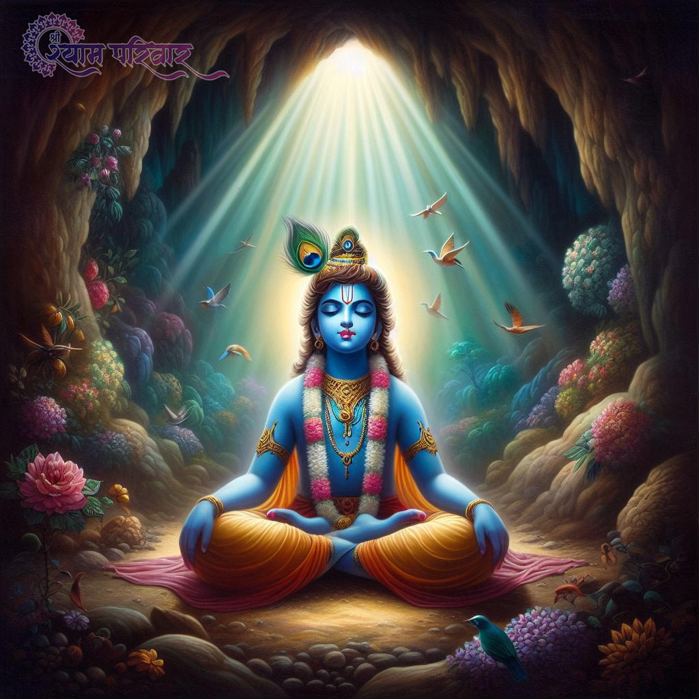

હુ કોણ છુ હુ ફક્ત કર્મ છુ જે કર્મ સારુ કરવાથી સારુ પરિણામ મેળવુ છુ અને જે કર્મ સારું ના કરવાથી સારુ પરિણામ નથિ મેળવ તો હુ એ છુ. આ જીવન શુ છે પોતાના ધર્મ કર્તવ્ય નું પાલન કરવા માટે જીવવુ અને મરવુ . અને ધર્મ કર્તવ્ય સારુ કર્મ શુ હોય છે. સારુ કર્મ એટલે સારુ વિચારવુ સારુ હોય એવુ જોવુ સારુ હોય એવુ સાંભળવુ, અને ભગવાન ની નવ રીત ની ભક્તિ છે એમાં થી એક અથવા ઘણીય ભક્તિ કરવી. સારુ કર્મ છે. ૯ નવ રીત ની ભક્તિ નુ પાલન કરવાનું હોય એમાં ૧)પ્રભુ હરી કે ભગવાન નું સ્મરણ કરવુ.= નિત્ય નિરંતર ભગવાન નું સ્મરણ ધ્યાન ભગવાન ની પ્રથમ ભક્તિ છે.( ભગવાન એ છે જે પોતે આ નવ રીત ની ભક્તિ અને આ સોળ સત ગુણ નું પાલન કરે છે.) ૨) માતાપિતા ની સેવા.= ધર્મ અર્થ કામ મોક્ષ નું આમાં જણાવેલ પ્રમાણે પાલન કરનારા માતાપિતા ની સેવા, ભગવાન શિવ માતાપાર્વતિ સમજીને સાચી સેવા કરે એ ભગવાન ની દ્રીત્રિય ભક્તિ છે. ૩) ગુરુદેવ ની સેવા.= ગુરુને જ સાચા પ્રેમ થી રાખે અને તેમની સાચી સેવા કરે તે ભગવાનની ત્રિત્રિય ભક્તિ છે. ૪) પતિ ની સેવા.= પોતાના સત ગુણી સત્યવાદી પતિની જે ઈચ્છા એ જ આપણુ જીવન છે એમ સમજીને પતિ ના આદેશ નું પાલન કરે અને સેવા કરે એજ ભગવાન ની ચોથી ભક્તિ છે. ૫) પોતાના દેશ નું સાચુ કલ્યાણ.= સર્વ પ્રથમ સાચો ન્યાય ધર્મ ના આધાર ઉપર આપે, સાચી વિદ્યા દરેક રીત ની બધા ને મળે સ્વાર્થ વગર મળે. અને સારુ આરોગ્ય મળે સાચી પધ્ધતિ થી જેમા થોડીક પણ નિષ્ફળતા ના હોય એવુ જ્ઞાન આપે બધાને. અને રોગી થાવાજ ના દેય તેવું અને સારુ ચારિત્ર થાય તેવુ જ ભોજન નું કાર્ય કરાવે સારુ જોવડાવે ખરાબ ક્યારેય નો દેખાડે અને સારુ જ સંભળાવવે સાત્વિક હોય એવુ. અને જેવી રીત ના સૂર્યદેવ ધરતી ઉપર પાણી શોસે જ્યાં નદી તળાવ માં પાણી વધારે હોય ત્યાં વધારે પાણી શોસે અને જે જગ્યાએ ધરતી સૂકી ત્યાં પાણી ઓછુ શોસે તેમ જ લોકો પાસે દયા પ્રેમ થી કર લઈને અને તે કર લોકો ના જીવનના દુખ દૂર કરવા ભૂખ્યા ને ભોજન કરવા આશ્રરા વગર ના ને આશ્રરો આપવા રોગી ની પીળા દૂર કરવા ઉપયોગ કરે તે ભગવાનની પાંચમી ભક્તિ છે. ૬) માનવ સેવા.= ભેદભાવ વગર ભૂખ્યાઓને ભોજન આપે રોગી ની પીળા દૂર કરે અને માણસો ને સાચો સારો માર્ગ બતાવે જેથી એવા કાર્યો ના કરે કે જેથી દુખી થાવુ પડે. એવિ ભગવાનની છ્ઠ્ઠિ ભક્તિ છે. ૭) દાન.= કોઈ ને કાઇપણ આપવુ સ્વાર્થ વિના મનમાં યાદ રાખ્યા વિના કોઈપણ પ્રકાર ની ઇચ્છા વિના આપે તે ભગવાનની સાતમી ભક્તિ છે. ૮) ભગવાન ના ગુણગાન કરવા.= ભગવાન ના અવતારો નું નિત્ય નિરંતર વર્ણન કરવું અને સાંભળવવું સંભળાવવું તે ભગવાનની આઠમી ભક્તિ છે. ૯) સત્ય ની વૃધ્ધિ કરવી.= જેવી રીત ના ભગવાન શ્રી રામે અહંકારી અધર્મી બાલી અને રાવણ ને મારી ને ધર્મ સત કાર્ય ની મર્યાદા સ્થાપિત કરી. ભગવાન શ્રી ક્રુષ્ણ એ બે ધર્મ ના પાલન માં જે મોટો ધર્મ હોય તેનુ પાલન કરી સાત્વિક ધર્મ ની વૃધ્ધિ કરી અને સાત્વિક જ્ઞાન ની વૃધ્ધિ કરી એવિ જ રીત ના જે માણસ ધર્મ ની મર્યાદા અને તેનુ જ્ઞાન વૃધ્ધિ કરે તે કાર્ય ભગવાનની નવમી ભક્તિ છે. હવે દરેક રીત ની ભક્તિ સાચી ત્યારે કરી કહેવાઈ જયારે આપણે આ 16 સોળ સત ગુણ નું પાલન કરીએ તો, નહીંતર આપણે પોતાની સાથે અને ભગવાન સાથે સંસાર સાથે ઢોંગ કરીએ છીએ. ખરેખર સોળ સત ગુણ નું પાલન ના કરતા હોય તો નાટક કરીએ છીએ ભગવાન સાથે પ્રેમ નો તેને સાચો પ્રેમ નથી કરતા. પણ ભોગોં ને મેળવવા સ્વાર્થ માટે નાટક કરીએ છીએ જો આ સોળ સત ગુણ નથી કરી શકતા તો ઢોંગી છું હુ. ૧) સત્ય બોલવુ,= પ્રાણ ચાલ્યા જાય પણ બોલેલુ વચન ખોટુ ના પડવુ જોઈએ. ૨) ખોટો ક્રોધ ના કરવો,= સાચો ક્રોધ બીજા નુ સારુ કરવા માટે જ હોય છે. ૩) મોહ ના કરવો,= રંગ રૂપ ના મોહ માં વિશ્વાશઘાત સહન કરવો પડે છે. ૪) ઈર્ષા ના કરવી,= કોઈ નુ સારુ થાતુ હોય તે અટકાવવુ ઈર્ષા છે. ૫) અભિમાન,= કોઈ પણ કાર્ય ભગવાન ની ક્રૂપા થી થાય છે તો કોઈ ને અભિમાન શેનુ છે. ૬) લોભ,= જ્યારે કોઈ પાસે ખુબજ કેરી છે તો કોઈ ગરીબ માંગે છતાય ના આપે તો તે લોભી છે. ૭) લાલચ,= ધન ની લાલચ માટે સારુ ના કરે તે ધન સંપતિ ના લાલચી છે. ૮) સ્વાર્થ,= મારા એક નુ સારુ થઈ જાય તો ઘણુય સારુ એમ વિચારવા વાળા પણ સ્વાર્થી છે સ્વાર્થ છે તેના મા ખૂબજ છે એટલે બધાય નું સારું થાય, એવું સતત કરવું જ સ્વાર્થ નથી કર્યો . ૯) વાસના,= પોતાની પત્ની અથવા પતિ સિવાય વિચાર કરવા વાળા કે કાર્ય કરવા વાળા વ્યકતિ વાસના ના દાસ નોકર બન્યા છે.જયારે પોતાની પત્ની અથવા પતિ સિવાય કોઈ નો વિચાર નો કરીએ તો વાસના નથી પોતાના માં. ૧૦) ભેદભાવ,= રંગ રૂપ નો ભેદભાવ ધનવાન ગરીબ નો ભેદભાવ જાતિ નો ભેદભાવ વગેરે ભેદભાવ ક્યારેય ના કરવા જોઈએ. ૧૧) ભય,= શુ સારુ કરવા માટે ભય અને ખોટુ કરવા માટે ભય નહિ એમ નહિ ગમે ત્યારે સારુ કરવા માટે કોઈ રીત નો ભય ના હોવો જોઈએ. ૧૨) આળશ,= આપણે ને સારુ કરવા માં જ આળશ થાય છે પણ ખરાબ કરવામાં કાઈ આળશ નથી થાતી એટલા માટે દરેક રીત નુ સારુ કરવામાં આળશ ના થાવી જોઈએ તો આપણે આળસુ નથી. ૧૩) સ્થિત પ્રગ્ય,= આપણે દરેક સ્થિતિ માં સુખ દુખ માં સ્થિર રહીને પોતાના કરેલા ને જેમ ભોગવાના હોય તેમ શાંતિ થી ભોગવીએ ચિનતા કર્યા વગર કારણ કે સારુ કરવાથી સારુ થાય છે અને નથી સારુ એવુ કરવા થી સારુ નથી થાતુ, તો સારુ આપણે સારુ ના હોય એવુ કરતી વખતે આપણે ને મજા આવતી હતી એમ જ તેનુ પરિણામ ભોગવામાં મજા આવવી જોઈએ, કારણ કે કરેલા કર્મો નુ પરિણામ શાંતિ થી ભોગવીએ નહિ તો નવુ ભોગવાનુ ચાલુ થાય એટલા માટે સ્થિરતાથી સુખ માં વધારે સુખી ના થાવુ દુખ માં વધારે દુખી ના થાવુ તે છે દરેક સમયે સ્થિર રેહવુ જોઈએ. ૧૪) કરેલ ઉપકાર ને કયારેય જીવન માં ન ભુલવો નહિ,= કોઈ નો આપણી ઉપર ઉપકાર હોય તેનુ ઋણ ચૂકવવી એ ત્યારે જ ઉપકાર ના ભૂલ્યા કેહવાય. ૧૫) દ્રઢ નિષ્ચય,= જે કાઈ સારુ કરવા માટે નિર્ણય લઈએ તેને પોતાના પ્રાણ આપીને પણ પૂરુ કરીએ તેને કેહવાય દ્રઢ નિષ્ચય. ૧૬) પોતાની શક્તિ નો સત ઉપયોગ કરવો,= કોઈ પાસે સાત્વિક બુધ્ધિ હોય અને જ્યારે યોગ્ય સમય હોય આપવાનો તોય છતાય કોઈ ને ના આપે તો તેની શક્તિ નો સત ઉપયોગ ના કર્યો કેહવાય, તેવી રીત ના વગેરે, (હવે બુધ્ધિ ત્રણ પ્રકાર ની હોય છે, સત્વ, રજ, તમ, તેમાં તમ,= બુધ્ધિ ઈર્ષાળૂ ભેદભાવ કરવા વાળી, ખોટો ક્રોધ સતત કરવા વાળી, બીજા નુ ક્યારેય કાઈ સારુ ના થાવુ જોઈએ તે બુધ્ધિ તામસી છે. હવે રજ બુધ્ધિ,= આળસી અને અભિમાની, સ્વાર્થી, અને વાસના વાળી હોય છે, તેને ધન સંપતિ માટે તો પોતાના પ્રાણ આપવા અને બીજા ના લઈ લેવા નિર્દયતા થી તે રાજસી બુધ્ધિ છે. હવે સાત્વિક બુધ્ધિ,= સાચુ લોક કલ્યાણ નુ કાર્ય કરે છે. તે મનુષ્યો ને જણાવે છે કે ભગવાન વિષ્ણુ જે સ્યંમ બધિ જ રચના છે તેમણે જણાવ્યુ કે માણસો ને સત ગુણો નુ પાલન કેમ કરાય શ્રી રામ અવતાર લઈને અને શ્રી ક્રુષ્ણ અવતાર લઈને જે ગુણો જે આચરણ અલગ અલગ પાત્રો દ્વારા જણાવ્યુ તેનું પાલન કરવુ જ ધર્મ છે. અને ભગવાનની ભક્તિ કરવી સાત્વિક બુધ્ધિ છે. ભુખ્યા ઓને ભોજન આપે, અને આશ્રરા વગર ના ને આશ્રરો આપે, રોગીની પીળા દૂર કરે, તે બુધ્ધિ છે. સાત્વિક બુધ્ધિ, જે પોતાનુ સુખ ભૂલીને માં બાપ ભાઈ બહેન વગેરે માણસો ને સાચુ સુખ મળે તેવો માર્ગ બતાવે છે. અને સદા સર્વાદા કોઈ સારુ સાચુ કરનાર નો જ સાથ આપે, અને પોતે કાયર થઈ ને અજાણતા પાપી ઓનો સાથ આપતો એવું સત ગુણી ક્યારેય નથી કરતો, એ એવું વિચાર તો નથી કે ભલે સંસાર માં પાપ વધે હુ તો મારુ જ સારુ કરીશ પાપ કરીને, તેવો માણસ સોળ સત ગુણી ક્યારેય નથી. ) સંસાર ના કર્તવ્યો 1 સાચો પ્રેમ કરવો બધા સારા જીવો ને અને ભગવાન ને પ્રેમ કરવો 2 સાચો પ્રેમ મેળવવો બધા સારા જીવો અને ભગવાન પાસે થી 3 પોતાના ઓથી મોટા ઓ ની સેવા કરવી 4 પોતાના દેશ ની પ્રજા નું પોતાના ગામ ની પ્રજા નું કલ્યાણ કરવું 5 પોતાના સંતાનો ને સત કર્મ કરાવવા 6 પોતાના સંતાનો ના સમયસર્ વિવાહ જીવન અથવા સન્યાસ જીવન આપવું 7 પોતાના સંતાનો ના સંતાન ને સત ગુણી બનાવવા 8 પોતાના સંતાનો ના સંતાન ને સમયસર વિવાહ જીવન અપાવવું 9 દરેક મનુષ્ય નું કર્તવ્ય છે કે તે સદા સર્વદા સત્ય જગ્ગત ગુરુ શ્રી કૃષ્ણ નો સાથ આપે 10 કોઈ દેવી દેવતા નુ કયારેય અપમાન કરવું નહી તે આપણું કર્તવ્ય છે. 11 નિર્દોષ ને દોર્ષ ના આપવો દરેક મનુષ્ય નો કર્તવ્ય છે. 12 ઘર શિક્ષા વિદ્યા ભોજન રોગી ની દવા માં ધન રૂપિયા કમાવાની લાલચ નો રાખવી અન્તે તે જે આપે તે સ્વીકારી લેવું 13 કોઈ ની ધરતી કે સંપત્તિ છીનવી ના લેવી 14 કોઈ અનાથ કે લાચાર ઉપર અત્યાચાર રોકવો બધાય મનુષ્ય નું કર્તવ્ય છે. 15 એક સાચા નો સાથ આપવો બધાય લોકો નો કર્તવ્ય છે. 16 પોતે જે કામ માટે રૂપિયા અથવા ઘર નું ભરણ પોષણ કરી છી એ તે કામ કરવા માં કાઈ ખામી નો રેવી જોઈએ
જયારે આ ધરતી ઉપર મનુષ્યો વાનરો રાક્ષસો કે પછી દેવતા ઓ પોતાની અવ્યવસ્થિત
બુધ્ધિ થી
ધર્મ નુ પાલન છોડી દેય છે. અને પોતાની મર્યાદા ઓ તોડી નાખે છે.
પોતે જે કરે તે સારુ છે એમ સમજે છે, ત્યારે ભગવાન વિષ્ણુ શ્રી રામ અવતાર
લઈને બધાય નો
થયેલો અહંકાર તોડવા અને ધર્મ મર્યાદા ઓ સ્થાપિત કરવા માટે, શ્રી રામ નામ
અવતાર ધારણ
કર્યો છે,
( ધર્મ એટલે સારુ હોય એવુ કરવુ ). જયારે કોઈપણ માણસ પોતાના સુખ સ્વાર્થ
માટે બીજા માણસ
નું મન દુખાડે છે તેને દુ:ખ પહોચાડે છે તે અધર્મ છે. જયારે કોઈપણ માણસ
પોતાના સ્વાર્થ
વગર કોઈ
ની સેવા કરે અને તેને સુખ પહોચાડે શાંતિ પહોચાડે તે કાર્ય ધર્મ છે. ( એના
બદલે અત્યારે
અલગ અલગ જાતિ પ્રમાણે ધર્મ સમજવા મા આવે છે ). ( ધર્મ તો તેને કહેવાય
જેનાથી બીજા માણસ
નું સારુ
થાય દુઃખીયાઓના દુઃખ દુર થાય ભૂખ્યા ઓને ભોજન મળે આવી રીત નું કાર્ય ધર્મ
છે ). શ્રી
રામ ના પિતા રાજા દશરથ તેને ત્રણ રાણી હતી, કૌવશ્લ્યા કૈકૈઈ સુમિત્રા તે
ત્રણ માંથી
કૈકૈઈ ને મહારાજ દશરથે
બે વચન આપ્યા હતા. દશરથ રાજા એ કીધુ હતુ કે જેવુ માંગીશ એ પ્રમાણે હુ તને
આપીશ તારી
ઈચ્છા પ્રમાણે આપીશ. તો સમય આવતા કેકેઇ એ બે વચન માગ્યા, પહેલુ રામ ૧૪ વર્ષ
વનવાસ મા
રહે અને
મારો પુત્ર ભરત અયોધ્યાનો રાજા બને, એવુ કૈકૈઈ એ તેના વચનો માં માંગ્યું,
તો ત્યાર પછી
દશરથ રાજા ખુબ જ દુઃખી થયા. અને શ્રી રામ ને તેમણે વનવાસ જાવાની આજ્ઞા ન
હોતી આપી તોઈ
શ્રી રામ
વનવાસ જાવા માટે ત્યાર થઇ ગયા તો ત્યારે તેમની સાથે તેમના નાના ભાઈ લક્ષ્મણ
મોટા ભાઈ ની
સેવા કરવા માટે પોતાની પત્ની ઉર્મિલા ને ત્યાં જ છોડી ને જાવા માટે ત્યાર
થઈ ગયા. અને
ત્યાર પછી શ્રી રામ ના પત્ની સિતા માતા વનવાસ મા પોતાના પતિ સાથે રહેવા
ત્યાર થઇ ગયા.
અને ત્યાર પછી શ્રી રામ તેમના પત્ની સિતા માતા અને ભાઈ લક્ષ્મણ તે ત્રણેય
વનવાસ ગયા.
અને ત્યાં ચિત્રકૂટ નામના સ્થળે રહવાનો વસવાટ કર્યો. તો જયારે ભરત તેમના
મામા ના ઘરે થી
અયોધ્યા પાછા આવ્યા અને થયેલી ઘટના ઓની જાણકારી થઇ તો તે ઘણા દુઃખી થઈ ગયા.
પહેલા તો તેમના પિતા રાજા દશરથ મુત્યુ પામી ગયા હતા, એટલે પિતા ના શરીર નું
અગ્નિ
સંસ્કાર કર્યા. અને પછી ગુરુજનો રાજ્ય મંત્રી ઓ અને અયોધ્યાની પ્રજા ને
સાથે લઈને જ્યાં
શ્રી રામ માતા સિતા અને લક્ષ્મણ વનવાસ મા ચિત્રકૂટ નામ ના સ્થાને રહેતા
હતા, ત્યા બધાજ
લોકો સાથે ભરત ત્યા પહોંચ્યા, ભરતે શ્રી રામ ના ચરણ પાસે જઈને તેની કોઈપણ
રીત
ની ભુલ હોય તેની માફી માંગી અને જયારે ત્યાં સભા કરી તો તે સભાની અંદર ભરતે
શ્રી રામ ને
પ્રાથના કરી કે ભાઈ તમે અયોધ્યા ના રાજા બનો, અને હું ૧૪ વર્ષ અહિયા વનવાસ
માં રહીશ,
ત્યાર પછી શ્રી રામ બોલ્યા ભરત ધર્મ વેપાર નથી, જેમા વસ્તુ ની અદલા બદલી થઈ
શકે, ધર્મ
વ્યક્તિગત હોય છે. ધર્મ સુક્ષ્મ અને કઠોર હોય છે. અને બધા પ્રાણીઓ એકા બીજા
ઉપર પોતાના કર્તવ્યો નાખી દેશે તો સંસાર માં અનાચાર ફેલાઈ જાશે. માટે એવુ
સારુ નથી, ભરત
ત્યાર પછી ભરત બોલ્યા ભાઈ મને અત્યારે કાઈ સમજાતુ નથી મારે શુ કરવુ અને શું
નથી કરવાનુ,
તમે જલ્દી અયોધ્યા આવી જાવો એવો મારો નિશ્ચ્ય છે. નહીતર હુ તમારા ચરણો માં
પોતાના પ્રાણ
આપી દેઇશ, શ્રી રામ બોલ્યા નહિ ભરત એમ ના કરતો મને ધર્મ સંકટ માં ન નાખતો
ત્યાર પછી
જયારે સીતા માતા ના પિતા રાજા જનક આવ્યા. અને એમણે સારુ કહયું શ્રી રામ ને
હે શ્રી રામ
ભરત તમને નિસ્વાર્થ પ્રેમ કરે છે. તેનો પ્રેમ સ્વાર્થ વિના નો છે. માટે
તેનું પલળુ ભારે
છે,
પછી ભરત ને કહયું રાજા જનકે ભરત નિસ્વાર્થ પ્રેમ બધા જ ધર્મો ના પાલન થી
ઉપર છે. પણ
નિસ્વાર્થ પ્રેમ તેને કેહવાય જે પ્રેમી પોતાના પ્રેમ ને આપવા માંગે છે.
તેની પાસે થી કઈ
મેળવવા માંગતો નથી,
તેવી કાઈ ઈચ્છા રાખતો નથી, માટે ભરત તમારે એમ કરવુ જોઈએ કે શ્રી રામ ની
ઈચ્છા જે હોય તે
પ્રમાણે તમારે કરવુ જોઈએ. ત્યાર પછી ભરત બોલ્યા જનક રાજા ને મહારાજ અત્યાર
સુધી
હું ફક્ત મારી કીર્તિ વિષે જ વિચાર કરતો હતો, પણ તમે મને સારુ જ્ઞાન આપ્યુ
સ્વાર્થ
વિનાનું થાવાનું એ માટે હુ તમારો ઉપકાર ક્યારેય નહિ ભુલીશ. ત્યાર પછી ભરત
શ્રી રામ ના
ચરણ નો સ્પર્સ કરી ને
બોલ્યા ભાઈ બોલો તમારી શું ઈચ્છા છે. શ્રી રામ બોલ્યા જેટલા પ્રેમ થી તું
મને જે રાજ્ય
શોપવા આવ્યો છો તેને હુ સ્વીકાર કરુ છુ.
પણ પિતા નું વચન ખોટું ન પડી જાય એટલા માટે હુ ૧૪ વર્ષ વનવાસ મા રહીશ ૧૪
વર્ષ પછી હુ તે
રાજ્ય તારી પાસે થી લઇ લેઇશ. ત્યાં સુધી તું રાજા બની ને રેહજે,
ભરત બોલ્યા ભાઈ તમારી રાજ ગાદી ની ઉપર હુ નહિ બેસી શકી, એટલા માટે મને
તમારી ચરણ પાદુકા
આપો. રાજગાદી ઉપર તે ચરણ પાદુકા રાખીને
તેની દરરોજ પૂજા કરીશ. અને રાજ કાર્ય ભાર હુ સંભાળીશ ત્યાર પછી ભરત અને
અયોધ્યા ની
પ્રજા ગુરુજનો મંત્રી ઓ બધા જ ચિત્રકૂટ થી અયોધ્યા ચાલ્યા ગયા. ત્યાર પછી
શ્રી રામે સિતા ને લક્ષ્મણ ને કહયું હવે આપણે આ વન પ્રદેશ છોડી ને ક્યાંક
બીજે જાવુ
પડશે, ત્યાર પછી આગળ ચાલતા ચાલતા એક આશ્રમે પહોચ્યા જ્યાં કોઈ ઋષિઓ રેહતા
નહોતા.
પણ આસપાસ ના ઋષિઓને જાણ થતા શ્રી રામ પાસે આવ્યા, જે આશ્રમ ઉજળી ગયું હતુ
તેને શ્રી રામ
જોતા હતા, ત્યાં માણસો ના હાડકા નો ઢગલો જોયો ત્યાર પછી ઋષિઓ શ્રી રામ ને
બોલ્યા.
હે શ્રી રામ તમે જે જોઈ રહયા છો, તે હાડકા નો ઢગલો ઋષિ ઓના હાડકા નો ઢગલો
છે. શ્રી રામ
બોલ્યા ઋષિ ઓ સાથે એવુ કોણ કરનારા છે. ઋષિ ઓએ જવાબ આપ્યો હે શ્રી રામ વન ની
અંદર
રાક્ષસો ખુબજ ત્રાસ આપે છે.
એવુ કરનારા રાક્ષસો હતા માટે અમારી પ્રાથના છે તમને તમે એ બધા રાક્ષસો થી
અમારી રક્ષા
કરો. શ્રી રામ બોલ્યા હે મુની જનો તમારી રક્ષા કરવાની સેવા નું કાર્ય મારુ
વનવાસ બને તો
હુ મારુ સૌભાગ્ય સમજીશ.
હે મુની જનો હુ અને મારો ભાઈ લક્ષ્મણ અમે બન્ને આજ થી પ્રતિજ્ઞા લઈએ છીએ
ત્રાસ આપવા
વાળા રાક્ષસો ને તેના અધર્મી કાર્યો ને સફળ ક્યારેય નહી થાવા
દેશુ. ત્યાર પછી અલગ અલગ વનો મા જઈને શ્રી રામ અને લક્ષ્મણે રાક્ષસો ને
માર્યા. તેમના
વધ કર્યા. ત્યાર પછી એક વખત રાવણ ના નાના ભાઈ ખર અને દુષણ નામના
રાક્ષસો ને માર્યા તેમના વધ કર્યા ત્યાર પછી રાવણે એક કપટ કર્યું, સિતા
માતા ને વન
માંથી તેના રાજ મહેલે લઈ જવા માટે નું અને તેવા કપટ માં તે સફળ થયો. જયારે
સિતા માતા ને
રાવણ
પોતાના પુષ્પક વિમાન મા લંકા લઈગયો ત્યાં તેમની અશોક વાટિકા એ પોતાની મનની
ઈચ્છા
પ્રમાણે ચાલતુ પુષ્પક વિમાન નીચે ઉતાર્યું ત્યારે સિતા માતા ત્યાં નીચે
ઉતરીને એક ઝાડ
ની
નીચે બેસીને એક ઘાસ નું તણખલું પોતાના હાથમાં ઉપાડીને પોતાનાથી થોડે આગળ
રાખીને બોલ્યા
હે જગદમ્બા માતા જો મે મારા પતિ સિવાય ના પુરુષ ને ભાઈ પિતા પુત્ર સમાન જ
રાખ્યા હોય,
તો આ પાપી રાવણ જો આ ઘાસ ના તણખલા ને પાર કરે તો અત્યારે જ ભષ્મ થઈ જાય
ત્યાર પછી રાવણે
તેવુ સાંભળયુ એટલે પાર કરવાનો સાહસ ન કરી શક્યો કારણ કે સિતા માતા તન મન થી
તેમના પતિ ની જ નિરંતર ભક્તિ સેવા કરવા મા લીન રહેતા હતા.તો તેવા સતિની
શક્તિ અસત્ય ન
હોય સિતા માતા ની શક્તિ સાચી હતી, માતા સીતા બોલ્યા હે રાવણ તે તારા હાથ થી
મારો સ્પર્સ
કર્યો એટલું પાપ તારા વિનાશ માટે ઘણુય છે. ત્યાર પછી શ્રી રામ સિતા માતા ના
વિયોગ થી
ખુબજ દુઃખી થયા અને શ્રી રામ લક્ષ્મણ તેમને શોધવા માટે, ચાલતા ચાલતા જટાયુ
ગીધ ઘાયલ
પડેલા હતા, ત્યાં પહોચ્યા તેમણે શ્રી રામ ને કહયું સિતાપુત્રીને રાવણ
દક્ષિણ દિશા મા લઇ
ગયો છે. મે તેને બચાવવા માટે રાવણ સાથે યુધ્ધ કર્યું પણ તેણે મારી પાંખ
કાપી નાખી છે.
એમ બોલતા જટાયુ મુત્યુ પામ્યા.
ત્યાર પછી દક્ષિણ દિશા મા આગળ જતા સબરી માં ની ઝુંપડી એ પહોચ્યા સબરી માં
નીચી જાતી ના
હતા પણ તેમના ગુરૂ મંતક મુની ના જ્ઞાન થી શ્રીરામ પ્રભુ ની ભક્તિ પ્રાપ્ત
થઈ હતી. શ્રી
રામ કોણ છે, અને ભવિષ્યમાં શું થવાનું છે.
તે સબરી માં જાણતા હતા માટે જયારે સબરી માં ને ખબર પડી હતી. કે શ્રી રામ એક
દિવસ તેમની
પાસે જરૂર આવશે ત્યાર થી સબરી માં દરરોજ શ્રી રામ ની વાટ જોતા હતા. અને
દરરોજ સવારે
રસ્તા ઉપર ફુલ પાથરતા શ્રી રામ માટે
ફળ ચાખીને લઈ આવતા. જયારે એ સમય આવી ગયો ત્યારે સબરી માં ને શ્રી રામ ને
જોઇને આખો
માંથી આંસુ આવી ગયા. અને શ્રી રામ નું લક્ષ્મણ નું ખુબજ પ્રેમ થી સ્વાગત
કર્યું .શ્રી
રામ ને લક્ષ્મણ ને આસન ઉપર
બેસાડીને પોતે ચાખેલા બોર ભોજન માટે આપ્યા. પ્રભુ શ્રી રામ પ્રેમ થી ચાખેલા
બોર ખાઈને
પ્રશન્ન થયા. ( જે પણ લોકો ભગવાન શ્રીરામ થી પોતાને મોટા સમજતા હોય. તે જ
માણસ જાતિ નો
ભેદભાવ કરી શકે છે. )
( કારણ કે શ્રી રામે નીચી જાતી ની અછૂત સબરી માં ના ખાધેલા હેઠા બોર ખાધા
છે. ) ( તો
શ્રી રામ થી પોતાને મોટા સમજતા હોય તે જ ભેદભાવ કરી શકે ને. )
ત્યાર પછી સબરી માંતા ને શ્રી રામે પૂછ્યું માંતા સુગ્રીવ નું રેહવાનું
સ્થાન ક્યાં છે.
આ વન મા તે અમને ક્યાં મળશે તે અમને જણાવો ત્યાર પછી સબરી મા એ કહયું
દ્રીસમુખ
મલ્યાદ્રીમ નામના
બે શિખરો આગળ આવશે ત્યાં જ સુગ્રીવ પોતાના પાંચ મંત્રી ની સાથે વસવાટ કરે
છે. તેમાં
તમારી ભક્તિ કરનાર એક મંત્રી હનુંમાન પણ છે. ત્યાર પછી શ્રી રામ લક્ષ્મણ તે
પર્વત ની
પાસે પહોચ્યા ત્યાં વીર હનુંમાન મળ્યા.
હનુંમાન ભગવાન શિવ ના અંશ અવતાર છે. માટે તે જાણતા હતા કે શ્રી રામ કોણ છે.
પણ સુગ્રીવ
નોહતા જાણતા કે શ્રી રામ કોણ છે. ત્યાર પછી હનુંમાન બોલ્યા મહારાજ સુગ્રીવ
તમારુ
ખોવાયેલું રાજ્ય તરત જ અપાવી દેશે તેમનું સ્વાગત કરો.
જયારે શ્રી રામ સુગ્રીવ તથા જામવત નલનીલ તેમના મંત્રી સહિત બધાય ને મળ્યા
ત્યારે
સુગ્રીવ પાસે થી શ્રી રામે મિત્રતા માંગી સ્વાર્થ વિનાની મિત્રતા સુગ્રીવ
બોલ્યા હે
શ્રી રામ હુ તમારી સાથે મિત્રતા કરુ છુ.
ત્યાર પછી શ્રી રામે પોતાના મિત્ર સુગ્રીવ નું દુઃખ દુર કરવાનો નિશ્ચ્ય
કર્યો. સુગ્રીવ
નો મોટો ભાઈ મહારાજબાલી તે તેના નાના ભાઈ ને રાજ્ય થી કાઢી ને નાના ભાઈ ની
પત્ની ને
પોતાની પાસે રાખીને ધર્મ મર્યાદા તોડી હોવાથી.
તેવા બાલી નું વધ કર્યું. અને શ્રીરામે બાલી ને મરતા સમયે કહયું મોટોભાઈ
પિતા ગુરૂ એ
ત્રણેય એક સમાન માનવા તે ધર્મ છે. નાનોભાઈ પુત્ર શિષ્ય એ ત્રણેય એક સમાન
માનવા તે ધર્મ
છે. નાનાભાઈ ની પત્ની અને પુત્રી બહેન તે ત્રણેય ને એક સમાન
માનવા તે ધર્મ છે. જયારે તે સુગ્રીવ નો મોટોભાઈ થઈને તેમની પત્ની ને પોતાને
પાસે રાખીને
નાના ભાઈ ને ઘર થી કાઢ્યો કારણ વગર માટે તે અધર્મ નું પાલન કર્યું. અને
મર્યાદા તોડી
હોવાથી તેવા અધર્મી નુ વધ કરવું ધર્મ છે.
શ્રી રામે કહયુ સતપુરુષ નો ધર્મ તેવો હોય છે કે અધર્મ ને બંધ કરાવીને ધર્મ
મયાર્દા ની
વુધ્ધિ કરાવવી. ત્યાર પછી સુગ્રીવ કિશકીન્હા નો રાજા બનીને, શ્રીરામ ની
સેવા માટે કરવા
પોતાની બધી વાનર સેના શ્રી રામ ની સેવા માટે લગાડી.
શ્રી રામ ને જયારે લંકા જાવા માટે જયારે સમુદ્ર એ રસ્તો ન આપ્યો, ત્યારે
સમુદ્ર ને
સળગાવી નાખવાનું બાણ પ્રગટ કર્યું. ત્યારે સમુદ્ર દેવ પ્રગટ થઈ ઉપાય કહયો
નલ નીલ ના હાથ
દ્વારા જે ફેકાશે તે ડૂબશે નહી કારણ કે તેને એવો શ્રાપ મળ્યો છે.
એટલે સમુદ્ર ઉપર પથ્થર તરશે ડૂબશે નહી. માટે સમુદ્ર ઉપર તમે પુલ બનાવો
ત્યાર પછી
પથ્થરોનું પુલ લંકા સુધી બની ગયું. અને ત્યાં પોચીને શ્રી રામે રાવણ ને
સુધરવા માટે એક
અવસર આપ્યો શાંતિ દૂત બનીને અંગત ગયા રાવણ ને કહયુ,
સિતા માતા ને સન્માન થી શ્રી રામ પાસે મોકલી દયો તો શ્રી રામ તમારી ભૂલ માફ
કરી દેશે
નહિતર સંપૂર્ણ કુળ સહીત વિનાશ કરી નાખશે. પણ રાવણ ના કર્મો એ તેમના વિનાશ
માટે ની
બુધ્ધી જણાવી, એટલે યુધ્ધ થયુ રાવણ ના પુત્રો
તેમનો ભાઈ કુંભ કર્ણ મુત્યુ પામ્યો છેલ્લે તેમનો અજેય જેને હરાવી ન શકાય તે
મેઘનાથ ને
યુધ્ધ માં મોકલ્યો મેઘનાથ ના બે નામ હતા મેઘનાથ અને ઇન્દ્રજીત પણ હતુ
ઇન્દ્રજીત જયારે
યુધ્ધ મા જવાનો હતો. ત્યારે તેની માતા મંદોદરી ના ચરણે સ્પર્શ કરીને, યુધ્ધ
મા વિજય
થવાના
આશીર્વાદ માગ્યા. મંદોદરી બોલ્યા જો ભગવાન પછી સંસાર ની અંદર માતાનું સ્થાન
હોય તો વિજય
થાય આજ ના યુધ્ધ મા. એટલા માટે ઈન્દ્રજીત પહેલા દિવસ ના યુધ્ધ મા શ્રીરામ
અને લક્ષમણ ને
નાગપાસ અસ્ત્ર મા બાંધી દીધા હતા. ત્યાર પછી શ્રી રામ લક્ષ્મણ ને
નાગપાસ અસ્ત્ર માંથી છોડાવા, માટે હનુમાનજી ગરુડ દેવતા ને ધરતી ઉપર લઇ
આવ્યા. અને
ગરુડજી નાગો થી શ્રી રામ લક્ષ્મણ ને મુકત કરીને તેની ચેતના માં જગાડ્યા.
ત્યાર પછી
જયારે લક્ષ્મણ ની સાથે મેઘનાથ નું ત્રીજી વઘત નું યુધ્ધ થયું,
ત્યારે લક્ષ્મણ નું વધ કરવા માટે એક પણ અસ્ત્ર કામનો હોતું કરતુ. તો
બ્રહ્માં અસ્ત્ર
છોડ્યું અને તે પણ અસ્ત્ર અદ્ર્શ્ય થઈ ગયું. ત્યાર પછી ઇન્દ્ર્જીતે શિવ
ભગવાન નું
પાસુપતાન ત્રિશુલ લક્ષ્મણ ઉપર છોડ્યું. તો પણ લુપ્ત થઈ ગયુ. ત્યાર પછી
વિષ્ણુ ભગવાનનુ
સુદર્શનચક્ર પ્રગટ કરાવીને છોડ્યું,
તો તે લક્ષ્મણની પ્રદક્ષિણા કરીને લુપ્ત થઇ ગયું. તો ઇન્દ્રજીત તેમના પિતા
રાવણ પાસે
વાત કરવા માટે ચાલુ યુધ્ધે રાજમહેલ ઉપર પ્રગટ થયો અને તેના પિતા ને ત્યાં
બોલાવીને વાત
કરી તમે આ યુધ્ધ જીતવાની ઇચ્છા છોડી દયો, રાવણ બોલ્યો ઇન્દ્રજીત યુધ્ધ
કરીને થાકી ગયો
હોય,
તો જા વિશ્રામ કર પણ કાયરતા ની વાતું ના કર મેઘનાથ. મેઘનાથક્રોધિત થઈને
બોલ્યો મને
કાયરના કહો પિતા શ્રી પણ હુ તમારા હિત માટે કેહવા આવ્યો છુ. તમે આ યુધ્ધમાં
વિજય થવાનો
વિચાર છોડી દયો કેમકે મારા અનુભવે જાણ્યું છે. કે લક્ષ્મણ માણસ નથી તેતો
ભગવાન છે
રાવણ બોલ્યો તને ભ્રમ થયો લાગે છે. ઇન્દ્રજીત બોલ્યો લક્ષ્મણ ઉપર મે
બ્રહ્માં અસ્ત્ર
છોડ્યું તો તે લુપ્ત થઈ ગયું જયારે મે શિવ ભગવાન નું પાસુપતાન અસ્ત્ર
છોડ્યું. તો તે
લુપ્ત થઈ ગયું. જયારે મે વિષ્ણુ નું સુદર્શન ચક્ર છોડ્યું તે પ્રદક્ષિણા
કરીને લુપ્ત થઈ
ગયું.
આ બધી શક્તિ ઓ લક્ષ્ય ને છેદવા મા ક્યારેય બદલી નો શકે જે ત્રિલોક ની અંતિમ
શક્તિઓ છે.
તેને લુપ્ત કરનાર લક્ષ્મણ નર નથી ભગવાન છે. રાવણ બોલ્યો જયારે તને એમ લાગતુ
હોય તો, તું
જા ભગવાન ના ચરણે ચાલ્યો જા ઇન્દ્રજીત રાવણ તો એકલો યુધ્ધ કરી લેશે.
જા ઇન્દ્રજીત બોલ્યો માફ કરજો પિતા હુ પિતા ને છોડી ને ભગવાન ના ચરણે નહિ
જાઈશ મને
મુત્યુ સ્વીકાર છે. કારણ કે શ્રી રામે પણ એવિ આપી છે. કે પિતા થી છૂટો
પડીને દેવતા ઓ પણ
સન્માન નથી કરતાં, તો ભગવાન શું સન્માન કરશે
એટલા માટે હું ભગવાન ના હાથે મારવા જઈશ. ત્યાર પછી લક્ષ્મણ અને મેઘનાથ ના
યુધ્ધમાં
મેઘનાથ નુ મુત્યુ થયું. ત્યાર પછી રાવણ અને શ્રી રામ અને રાવણ વચ્ચે યુધ્ધ
થયું, તેમાં
રાવણ નું મુત્યુ થયું. ત્યાર પછી રાવણ ના નાના માલ્યવાન શ્રી રામ ના શરણે
આવીને કહયું.
હવે લંકા ની અંદર બચેલો એક રાજ પરિવાર નો સભ્ય તમને રાજા સ્વીકાર કરુ છું.
શ્રી રામ
બોલ્યા પૂજ્ય માલ્યવાન કોઈની ધરતી ઉપર બળપૂર્વક અધિકાર કરવો ન અમારો ધર્મ
છે ના તો
અમારી નીતિ છે. તમને ને તો ખબર છે. કે અમે વિભીષણ ને
જયારે અમારા શરણે આવ્યા ત્યારે જ લંકા ના રાજા માની લીધા છે. લંકા ના રાજા
વિભીષણ છે.
અને આ બધુ કરવુ સતપુરુષ થી ધર્મ ની વુધ્ધિ કરાવામાટે જરૂરી કાર્ય હતુ. હે
પૂજ્ય
માલ્યવાન આ ધરતી તમારી છે, આ વિભીષણ તમારા છે. ત્યાર પછી શ્રી રામ નું
વનવાસ પુરુ થયું
અયોધ્યા મા જઈને, રાજા બન્યા શ્રીરામ અને જયારે રાજા બન્યા ત્યારે તેમના
પિતા મહારાજ
દશરથે, જેમ સમજાવ્યા હતા તેમ તેમના પૂર્વજો ની મૂર્તિ પાસે પ્રતિજ્ઞા લીધી
આજે મારુ કોઈ
સગું નહિ રેહશે ન કોઈ પારકું રહશે. આજથી પ્રજા અને સગા ઓ એક સમાન છે.
જ્યાં સુધી મારી પ્રજામાં એક પણ માણસ દુઃખી અથવા ચિંતિત રેહશે તો હુ પણ
શાંતિ થી નહિ
રહીશ. આજ થી મારા નગર મા કોઈ ભૂખ્યું સુવે નહિ દુઃખી રહે નહિ એમ કરીશ.
ત્યાર પછી રાજ્ય
મંત્રી ઓને આદેશ આપ્યો કે જેવી રીતે સૂર્ય ઉપર થી નીચે ધરતી પર થી
પાણી શોષે જ્યાં ધરતી સુકી હોય ત્યાં ઓછું પાણી શોષે છે. જ્યાં વધારે પાણી
હોય ત્યાં
વધારે શોષે છે. એવી રીતે માણસો પાસે થી કર લેવો જોઈએ. અને કર લેવો જરૂરી
છે. ત્યારે
જયારે હુ પ્રજા ની સેવા કરવા મા ખામી ન રાખું, ત્યારે નહિતર કોઈ રાજાને કર
લેવા નો
અધિકાર નથી.
માટે આજથી પ્રજા ખુશ રહે તે પ્રમાણે જ કરીશ. (જયારે કોઈ સામાન્ય માણસ હોય,
તો તેનો
પ્રથમ ધર્મ હોય છે, કે પોતાના માતા પિતા
પત્ની સંતાન પોતાના સગા સબંધી ઓને ખુશ રાખે, અને તેમની રક્ષા કરે, પણ જયારે
તે સામાન્ય
માણસ રાજા બને તો તેમનો પ્રથમ ધર્મ પ્રજા કલ્યાણ, અને પ્રજા ની આજ્ઞા નું
પાલન કરવુ, થઈ
જાય છે. પછી તેને અંદર થી દુઃખ પહોચે પણ પોતાના કર્તવ્ય નું પાલન ન છોડે.
)સિતા માતા ને
ભગવાન શ્રી રામે વનવાસ નો હતો આપ્યો. જયારે બીજી વખત સિતામાતા ને વનવાસ
જાવુ પડે તેવી
પ્રજા એ અફવા ફેલાવી હતી. સિતામાતા ને વનવાસ જાવુ પડે તેવી
પ્રજા એ અફવા ફેલાવી હતી. સિતામાતા શ્રી રામ ને પ્રાથના કરીને તે પોતે જ વન
મા ચાલ્યા
ગયા. શ્રી રામ અંદર થી ખુબ જ દુઃખી હતા. પણ ધર્મ કર્તવ્ય નું પાલન માટે
સિતામાતા થી
વિયોગ સહન કર્યો. જયારે વાલ્મીકી આશ્રમ મા સિતા માતા રેહતા હતા. ત્યાં લવ
કુશ નો જન્મ
થયો ગુરૂ વાલ્મીકી
લવ કુશ ને બધી શિક્ષા ઓ આપી. સંગીત વિધ્યા અસ્ત્ર વિધ્યા અને રામાયણ કથા
ગાતા શિખવાડી.
તો એક દિવસ કુશ ના મન માં પ્રશ્ન થયો. એટલે ગુરૂદેવ ને પૂછ્યું ગુરુદેવ તમે
કહો છો કે,
શ્રી રામ ભગવાન વિષ્ણુ છે. તો શું ફક્ત પ્રજા ની અફવાના કારણે પોતાની પત્ની
ને વનવાસ
આપી દેવાય. ગુરૂદેવ બોલ્યા કુશ તે આજે જે કરે છે, તે ફક્ત રાજ મર્યાદા
સ્થાપિત કરવા
માટે કરે છે.
ત્યાર પછી એક દિવસ કુશ ને શ્રી રામ સાથે ભેટ થાય ત્યારે પૂછે છે. મહારાજ
તમને તમારી
પત્ની ઉપર વિશ્વાસ હોવા છતાય તમે મહારાણી સિતા ને કેમ વનવાસ છોડી દીધા છે.
ત્યારે ભગવાન શ્રી રામ બોલ્યા આ રાજધર્મ છે. એક રાજા નો ધર્મ એવો હોય છે
કે, પ્રજા
સિવાય કોઈ તેનું સગું નથી હોતું. હુ તો પ્રજા નો સેવક છું. એક સામાન્ય માણસ
હોત તો હુ
મારી પત્ની થી અલગ ક્યારેય ન થાત.
ત્યાર પછી એવિ ઘટના થાય છેકે,માતા સિતા સદાય ને માટે પવિત્ર છે. એવું સાબિત
કરવા
માટે.સિતા માતા રાજ સભામાં કહે છે કે, જો ક્યારેય મે મારા પતિ સિવાય ના
પુરુષ નો મે
વિચાર કર્યો હોય તો હે ધરતી મા
તમારી ગોદ મા મને સ્થાન ન આપતા પણ મે નિરંતર સદાય મારા પતિ નો જ વિચાર
કર્યો હોય અને
તેને પ્રેમથી પૂજયા હોય, તો હે ધરતી મા આજે અત્યારે તમારી ગોદમા મને સ્થાન
મળે. ત્યારે
ધરતી માતા પ્રગટ ધરતી ફાડીને થાય છે.
અને સિતા માને સાથે લઇ જાય છે. એવું થાવુ સિતા મા પુરેપુરા પવિત્ર હતા, એની
નિશાની છે.
( ભગવાન દેવી દેવતા ઓ અધર્મી ઓનો જે સારુ નથી તેનો સાથ નથી આપતા, ભગવાન
દેવી દેવતા ઓ
સારુ કરનાર નો જ સાથ આપે છે. એટલે સિતા માતાના વેણ થી ધરતી ફાટી અને ધરતી
માં પ્રગટ
થયા. ) જય સિતારામ...
જયારે આ ધરતી ઉપર સાધુ પુરુષો પૂજનીય અને સાચા લોકો ઉપર અન્યાય થાય. અધર્મી
ઓ પાપી ઓ વધતા જાય ધર્મ નું
જ્ઞાન સુન્ય સમાન થઈ જાય.
ત્યારે ભગવાન ને સાધુ પુરુષો નો ઉધ્ધાર દુષ્ટો નો નાશ અને ધર્મ સારા કાર્યો
ની પુનઃ સ્થાપના કરવાના
ઉદેશ્ય થી ભગવાન અવતાર ધારણ કરે છે.( કોઈ રીત નો ટાઈમ પાસ કરવા માટે અવતાર
ધારણ નથી કરતાં. )
શ્રી કુષ્ણ અવતાર પુરેપુરો અવતાર છે. જેમાં કાઈપણ સમજવાનું બાકી રેહતું
નથી.
શ્રી કુષ્ણ અવતાર મા જન્મ દેહ પ્રગટ કર્યું.(એટલે કે જન્મા નહી પ્રગટ થયા.)
ત્યારે ત્યાં થી જ જણાવ્યુ
કે હુ ઈશ્વર છું. અને ભગવાનના ચમત્કાર મથુરા ની જેલ માંથી ચાલુ થયા. ગોકુળ
ગયા ત્યાર થી જ ચાલુ કરી
દીધા.
નાનકડું દેહ હતુ પણ રાક્ષસી પૂતના ને મારી. ત્યાર પછી ઉત્કચ કાગાસુર
ત્રેણાવત સકુંટાસુર જેવા દાનવો ને
માર્યા. પોતાના નાના નાના હાથ પગ થી જ માર્યા હતા. થોડાક મોટા થયા તો માખણ
દહીં છાશ પોતે પોતાના
બાળ મિત્રો ખાવા જોઈએ એટલા માટે ગામ ની ગોપી ઓ ગોકુળ થી મથુરા મા વેચવા
જાય. ત્યારે માટલી ઓ ફોડી ને
શ્રી કુષ્ણ અને તેમના મિત્રો ખાતા કારણ કે ગામના છોકરા ઓ નબળા ન રહે, અને
માખણ દહીં છાશ મા સંતોષ ન પામી
શક્યા હોય
તો સંતોષ અપાવતા. પહેલા ઘર ના સંતાનો સારો ખોરાક ખાઈ લેય ત્યાર પછી વેચવા
નીકળો. એમ જણાવતા શ્રી કૃષ્ણ
થોડાક મોટા વધારે થયા પછી બગાસુર અગાસુર ને માર્યા એક દિવસ યમુના નદી મા
ખુબજ ઝેરી કાલીયા નાગ ને માર્યો. અને તેને સમજાવ્યુ તારા ઝેર થી યમુના ને
દુષિત ન કર, તું સમુદ્ર માં
ચાલ્યો જા. ત્યાર પછી ભગવાને સુંદર જીવન માટે સુંદર પ્રેમ જણાવ્યો
જયારે શ્રી કૃષ્ણ ગોકુળ છોડી ને મથુરા કંસ ને મારવા જતા હતા. ત્યારે માતા
રાધા એ અને ગોકુળ
ની ગોપીઓ એ એમ કીધું છે કે. જેને આપણે પ્રેમ કરતા હોય તેમની ખુશી તેનું સુખ
આપણો
આનંદ છે. પ્રેમ તપસ્યા નું નામ છે. પ્રેમ સ્વાર્થ નું નામ નથી ભગવાન શ્રી
કુષ્ણ એ પ્રેમ એવો જણાવ્યો છે
કે, જેમાં કોઈપણ પ્રકાર નો સ્વાર્થ મોહ વાસના ની ઇચ્છા જ નો હોય એ પ્રેમ
સત્ય છે
( એટલે કે પ્રેમી અને પ્રેમીકા ક્યારેય વાસના ના વિચારો રાખતા નથી અને
વાસના ના કાર્યો
ક્યારેય કરતા નથી સાચો પ્રેમ વાસના નથી પવિત્રતા હોય છે. )
પ્રેમ ને ક્યારેય પોતાના પ્રેમ મા કોઈપણ પ્રકાર નો સંતોષ શાંતિ ન મળે તે
પ્રેમ ખોટો છે. સાચો
પ્રેમ મા પુરેપુરો સંતોષ થઈ જાય તે સાચો પ્રેમ છે. જે માણસ ને જેની સાથે
સાચો પ્રેમ થઈ જાય
જેવી રીતે પ્રેમી ને પ્રેમીકા સાથે માતા પિતા ને સંતાનો સાથે સંતાનોને માતા
પિતા સાથે
ભક્તિ કરનાર માણસ ને ભગવાન સાથે પ્રેમ થઈ જાય, તેમાં પુરેપૂરો સંતોષ શાંતિ
પામીને
એમ કહે હવે બીજું કાઈ નથી જોતુ. એવો પ્રેમ તેમની અંદર સાચો પ્રેમ છે.
માતા રાધા નો પ્રેમ ગોકુળ ની ગોપીઓનો પ્રેમ શ્રી કૃષ્ણ ની ભક્તિ છે.
માતારાધા એ પોતાનુ
જીવન શ્રી ક્રુષ્ણના પ્રેમ માં પસાર કર્યું. તેણે ક્યારેય શ્રી કૃષ્ણ ને
ભુલી જાવાનું નથી કર્યું. તે
તેમના
અંતિમ શ્વાસ સુધી શ્રી કુષ્ણ ના પ્રેમ મા જીવયા છે. ત્યાર પછી વધારે આગળ
સમયે શ્રી કુષ્ણ ના પિતા
વાસુદેવ તેમના સગા બેન કુન્તીદેવી પાંચ પાંડવો ની માતા દેવી કુન્તી
શ્રી કુષ્ણ ના ફઇ તેની પ્રત્યે ખુબજ લાગણી હતી. શ્રી કુષ્ણ ને અને શ્રી
કુષ્ણ ભગવાને પાંચ પાંડવો
ને તેમની માતા સાથે સળગતા લાક્ષાગ્રહ ના મહેલ માંથી બચાવ્યા. તેમની કૃપા થી
ત્યાર પછી
પાંચાલ દેશ મા દ્રોપદી ના સ્વયંવર મા મળ્યા. પાંચેય ભાઈઓ પાંડવ પુત્ર
દ્રોપદીના સ્વયંવર
મા જયારે કોઈ રાજા સફળ ન થઈ શક્યું, ત્યારે અર્જુન માછલીની આંખ વિન્ધવા
ત્યાર થયા.
અને વિન્ધી બતાવી તે એક સફળ થયા દ્રોપદી ના અર્જુન સાથે લગ્ન થયા.
ત્યાર પછી પાંચેય ભાઈઓ પોતાની ઝુપડી એ ગયા તો માતા કુન્તી ભગવાન ના ધ્યાન
મા
ઝુપડી અંદર હતા, જયારે યુધિષ્ઠીર કહયું હે માતાશ્રી, તો અંદર કુંતીદેવી ને
એમ થયું કે ભિક્ષા લાવ્યા છે.
તો એમને કહયું દરરોજ ની જેમ પાંચેય ભાઈઓ ભાગ પાડી લ્યો. જયારે દરરોજ ભિક્ષા
માંગી ને બોલાવતા પણ અર્જુન
આજે દ્રોપદી ની સાથે લગ્ન કરીને આવ્યા હતા. કુન્તી માતા ભિક્ષા નું સમજીને
એમ કહયું. પાંચેય ભાગ પાડી
લ્યો તો ત્યાર પછી યુધિષ્ઠીર ભિમ અર્જુન નકુલ સહદેવ પોતાની માતાની આજ્ઞા
નું ક્યારેય પાલન ન કર્યું હોય
તેવુ નથી કરતા.
એટલા માટે પોતાની માતાની આજ્ઞા નું પાલન રહે, તે માટે પાંચેય ભાઈ ઓ એ તેમના
જીવન માં તેમનાથી મોટા જે
આજ્ઞા આપે તે પ્રમાણે જ કર્યું છે. એટલે તે પાંચેય સાથે લગ્ન થયા. અને પાંચ
પતિ ની પત્ની દ્રોપદી એક સતી
નારી હતી.
પોતાના જે પતિ જે પાંચેય પાંડવો છે. તેમના સિવાય બીજા પુરુષ ને પોતાના પિતા
ભાઈ પુત્ર જ સમાન તન મન થી
સમજ્યા છે. તે દ્રોપદી દેવ કન્યા હતી. તે યજ્ઞ દ્વારા ઉત્પન્ન થઇ હતી.
દ્રોપદી શ્રી કુષ્ણ ને પોતાના ભાઈ
માનતી હતી.
અને તેમની ભક્તિ કરતી. ત્યાર પછી જયારે પાંચેય પાંડવો ના લગ્ન થઈ ગયા. એટલે
શ્રી કુષ્ણ ભગવાને પાંચેય
ભાઈઓ ની પ્રગતિ થાય. તે માટે હસ્તિનાપુર જઈને મહારાજ ધુતરાષ્ટ પાસે
પાંડવોની અલગ રાજધાની અલગ કાર્ય
હસ્તિનાપુર
થી અલગ રહે તેવી માંગણી કરી. ત્યારે પાંડવો ના ભાગે ખાંડવવન ની ભૂમિ મળી.
ત્યાં શ્રી કુષ્ણ અને અર્જુન
પહેલા જઈને તેનું નવું નિર્માણ કરાવ્યું. ત્યાર પછી તે ભૂમિ પર અદભુત
ચમત્કારી ઇન્દ્રપ્રસ્થ નામનો મહેલ
બનાવ્યો તે મેહલ માં રાજસુ યજ્ઞ રાખ્યું હતુ.
ત્યારે શ્રી કુષ્ણ ની પ્રથમ પૂજા કરવાની રાખી હતી. ત્યારે ત્યાં ભરાયેલી
સભા મા શિશુપાલે શ્રી કુષ્ણ ની
પૂજા કરવાનો વિરોધ કર્યો. શ્રી કુષ્ણ ભગવાને શિશુપાલ ની માતા ને વચન આપ્યુ
હતુ. કે હુ તમારા પુત્ર ના
૧૦૦ અપરાદ માફ કરીશ. જયારે શિશુપાલ
શ્રી કુષ્ણ ને અયોગ્ય શબ્દો કેહવા લાગ્યો, જયારે શિશુપાલે પુરા ૧૦૦ શબ્દો
કહી નાખ્યા ત્યારે
શ્રી કુષ્ણ બોલ્યા શિશુપાલ હવે તારી જીબે થી એક પણ શબ્દ અયોગ્ય નીકળશે તો
તારા જીવન નો છેલ્લો શબ્દ હશે.
અને શિશુપાલ ને ચેતવણી આપી તોઈ બોલ્યો અને શ્રી કૃષ્ણ એ ત્યારે જ પોતાના
સુદર્શન ચક્ર થી તેમનું માથું
કાપી નાખ્યું.
(જયારે ૧૦૦ અપરાદ માફ કરવાના હોય અને તે સુધરવા ન માંગે તેનું વધ કરો.
જયારે પણ
સારુ ન થાતુ હોય અને કોઈ રીતે થી સારું થાઈ નહિ એમ થાય. ત્યારે જ સાચો
ક્રોધ ઉપયોગી છે.
તેનો ઉપયોગ કરીને સારુ થાવુ જોઈએ તેવુ કરવુ જોઈએ.) ત્યાર પછી સમય જતા કૌરવો
ધુતરાષ્ટ ના
સંતાનો પુરા ૧૦૦ સંતાન તેમાં દુર્યોધન મોટો હોવાથી તેને હસ્તિનાપુર નો
યુવરાજ બનાવામાં
આવ્યો હતો. તેણે યુધિષ્ઠીર અને તેના ભાઈઓને દ્રોપદી સહીત ચોપાટ રમવા
આમંત્રણ આપ્યુ.
હતુ તેમાં યુધિષ્ઠીર પોતાનુ બધુ જ હારી ગયા, પહેલા તેમનો ઇન્દ્રપ્રસ્થ પછી
તેમની ભૂમિ અને
યુધિષ્ઠીર ના નાના ભાઈઓ ભિમ અર્જુન નકુલ સહદેવ ત્યાર પછી તેમની પત્ની
દ્રોપદી ને પણ
દાવ મા લગાવી હતી. તેને પણ હારી ગયા. ત્યાર પછી દુર્યોધન બોલ્યો જા દુશાસન
જઈને દ્રોપદી
ને વાળ પકડીને લઇ આવ. ત્યાર પછી ભરેલી સભા માં દ્રોપદી ને નગ્ન વસ્ત્રહીન
કરવાનો દુર્યોધને
આદેશ આપ્યો. જયારે એવું કાર્ય નો પ્રયત્ન ચાલતો હતો. ત્યારે પાંચેય ભાઇઓ
મોન એટલે બેઠા
હતા કે ધુતરાષ્ટ પાંચેય ભાઇઓ ના પિતા પાડું ના મોટા ભાઈ હતા. તો તે ન્યાય
અપાવશે એટલે
તેમનું માન રાખતા મોન બેઠા હતા. પણ તે સભામાં બેઠેલા ગંગા પુત્ર ભીષ્મ
મહામંત્રી વિદુર
ગુરૂ દ્રોણાચાર્ય વગેરે એ એક શબ્દ ન બોલ્યા. કેમ કે તે પણ ધુતરાષ્ટ ના આદેશ
પ્રમાણે કરતા
હતા. પણ ધુતરાષ્ટે ન્યાય ન કર્યો. અને દ્રોપદી ની સાળી જયારે દુશાસન ખેચવા
લાગ્યો ત્યારે
દ્રોપદી એ શ્રી કૃષ્ણ ને મદદ માટે યાદ કર્યા. અને શ્રી કૃષ્ણ અદ્રશ્ય રૂપે
પોતાની બેન દ્રોપદી ની
સાળી પૂરી જ ન થવા દીધી. દુશાસન સાળી ખેંચીને થાકી ગયો. પણ સાળી પુરી ન થઈ
તેવુ
સભામાં બેઠેલા બધાઓ એ જોઇને જાગ્રુત થઇ ગયા. રાજા ધુતરાષ્ટ ને સમજાવા
લાગ્યા. આવુ
કયારેય કોઈ સભામાં નથી થાતુ. કોઈક પાંચેય ભાઇઓ પાંડવો માટે બોલતું હતુ તો
કોઈક
દુર્યોધન માટે બોલતું હતુ. પછી એક નિર્ણય થયો એક શરત રાખવામાં આવી પાંડવો
ને ૧૨ વર્ષ
વનવાસ અને એક વર્ષ અજ્ઞાતવાસ કાઢવાનું ૧વર્ષ ના અજ્ઞાતવાસ જો પકડાઈ જાય તો
ફરી બીજા ૧૨ વર્ષ વનવાસ જાવાનુ. તેવી શરત પાંચેય ભાઇઓ એ સ્વીકારી કરી અને
તેવો એ
૧૨ વર્ષ વનવાસ ૧ વર્ષ અજ્ઞાતવાસ પસાર કરી બતાવ્યો. ત્યાર પછી દુર્યોધન ને
જાણ થઇ
તો દુર્યોધન ને કહયું યુધ્ધ કરીને પોતાનુ પાછું લઇ જાય. ત્યાં સિવાય
ઇન્દ્રપ્રસ્થ ખાંડવવન નહિ
આપીશ. ત્યાર પછી શ્રી કૃષ્ણ ભગવાન પોતે શાંતિ દૂત બનીને હસ્તિનાપુર ની
સભામાં બધ્ધા
વચ્ચે ધુતરાષ્ટ ને કહયું મહારાજ તમારા નાના ભાઈ ના પુત્રો ને શું તમે તેમનો
અધિકાર નહિ
આપો. ધુતરાષ્ટ બોલ્યા હે દ્વારકાધીશ હુ પુત્ર પ્રેમમાં લાચાર છું, હુ મારા
પુત્ર ને દુઃખી કરવા નથી
માંગતો. શ્રી કૃષ્ણ બોલ્યા ઠીક છે મહારાજ અહિયા આવતી વખતે પાંચ પાંડવો એ
કહયું હતુ કે તમે
મહારાજ ને વધારે કેહતા નહિ, તેને કેહેજો અમે પાંચ ભાઇઓ માટે પાંચ ગામ આપી
દેય તો અમે તેમાં સંતોષ કરી
લેશું. ત્યાર પછી મહારાજ ધુતરાષ્ટે શ્રી કુષ્ણ ને ફરી પાછો તેવો જ જવાબ
આપ્યો.
તો શ્રી ક્રુષ્ણ બોલ્યા મહારાજ ધુતરાષ્ટ તમે રાજા છો તમે કોઈનો અધિકાર લઇ
લ્યો એવું કરવાનુ નથી હોતુ
તમારે. તમારે તો બીજા ના અધિકાર ને લેવા વાળા ને બંન્ધી બનાવા જોઈએ. સભાની
અંદર
સકુંની બોલ્યો શ્રીકુષ્ણ તો હવે બંન્ધી બનાવાની વાતુ કરવા માંડ્યા છે. તો
દુર્યોધન બોલ્યો અરે
એને તો હુ હવે બંન્ધી બનાવીશ. એમ કરવા માટે શ્રી કુષ્ણ ની પાસે ગયો તો શ્રી
કૃષ્ણ ભગવાન પોતાનુ મોટુ
સ્વરૂપ ધારણ કર્યું. તેમાં સુદર્શન ચક્ર જોઇને દુર્યોધન કર્ણ તે બધા ડરી
ગયા.
ત્યાર પછી શ્રી કુષ્ણ ચાલ્યા ગયા. પાંડવો તથા કૌરવો વચ્ચે યુધ્ધ થાવાની
ત્યારી ત્યારે થઇ
જયારે યુધ્ધ ને ટાળ્યું પણ કૌરવો યુધ્ધ જ કરવા માંગતા હતા. કૌરવો ને યુધ્ધ
જ જોતુ હતુ.
ત્યાર પછી યુધ્ધ થાવાનુ નક્કી થયું. એટલે જેને ધર્મ ના પક્ષ મા યુધ્ધ કરવુ
હતુ, તેને પાંડવો નો
સાથ આપવા આવ્યા. અને જેને અધર્મ નો સાથ આપવો હતો, તે કૌરવો ના પક્ષ મા
આવ્યા હતા.
જયારે યુધ્ધ ની રણ ભૂમિ ઉપર કૌરવો ની સેના અને પાંડવો ની સેના સામ સામે ઉભી
હતી. ત્યારે
અર્જુન શ્રી કુષ્ણ ને કહયું હે કેશવ તમે આ રથ ને કૌરવો ની સેના પાસે લઇ
ચાલો હુ જોવા માંગું
છું કે પાંડવો ની સામે કોણ કોણ યુધ્ધ કરવા ત્યાર થયા છે. તે જોવા માંગું
છું ત્યાર પછી અર્જુન ને
બતાવવા માટે શ્રી કૃષ્ણ રથ ને કૌરવ સેના ની પાસે લઇ ગયા. અને દેખાડ્યા
કૌરવો ના સેનાપતિ
ગંગા પુત્ર ભીષ્મ ગુરૂ દ્રોણાચાર્ય કૃપાચાર્ય વગેરે મહારથી ને દેખાડયા તો
તે પોતાના સગાઓને જોઇને અર્જુન
એમ સમજવા માંડ્યા કે હુ પાપ કરીશ. એમ સમજવા લાગ્યા અર્જુને એટલા માટે તેણે
શ્રી કૃષ્ણ ને યુધ્ધ કરવાની
નાપાડી. તો ત્યાર પછી અર્જુન નું અધૂરું જ્ઞાન જોઇને શ્રી કૃષ્ણ
હસવા માંડ્યા. તો અર્જુન બોલ્યા હે કેશવ મારે શું કરવુ જોઈએ મને કાઈ
સમજાતું નથી મને સમજાવો હુ તમારા
શરણે આવું છું. હે કેશવ મને સમજાવો.
મારા વિચારો એવા છે કે બધાય લોકો સુખ શાંતિ સંતોષ મેળવે પણ સારુ કરતા કરતા
ખોટુ ખોટુ
કરતા નહિ, પાપ કરતા નહિ ખરાબ કરતા નહિ સારુ કરતા કરતા સુખ શાંતિ મેળવે પૂરે
પુરુ સારુ કરીને મેળવે. બધાય
લોકો એમ સમજે છે કે હુ સારુ કરુ છુ
ગમે ત્યારે હુ તો સારુ જ કરતો હોય એમ સમજે તો સમજતુ રેહવાથી પાપ અને ખરાબ
ખોટુ ક્યારેય સારુ છે એમ નથી થઈ
જાતુ. (પાપ ખોટુ ખરાબ ક્યારેય સારુ નથી જ)
હવે સારુ શું છે તે જાણો :- આ દુનિયા ની અંદર રેહવા વાળા બધા જ ભાઇઓ અને
બહનો એ કોઈપણ રીત ના વ્યસનો નહિ
કરવાના કારણ કે દારૂ જુગાર ના કારણે સંસ્કારો નું પાલન નથી
થાતુ અને જ્યારે સંસ્કારો નું પાલન નહી થાય તો ઘર ની અંદર ઝ્ગડા ઓ ચિંતા ઓ
દુખો આવે છે.
સારા સંસ્કારો નું પાલન નહિ થાય તો સંતાનો તેમના માતપિતા ના સાચા સારા
સંતાન નહિ થાશે.
પત્ની પતિ ની સાચી સારી પત્ની નહી બને ભાઈ ભાઈ નો નહી હોય બેહન ભાઈ ની નહી
હોય વગેરે સબંધો ફક્ત સ્વાર્થ
માટે રહી જાશે. અને સંસ્કારો નું પાલન થાશે તો સબંધો વચ્ચે સાચો સ્વાર્થ
વિના નો પ્રેમ આવી જાશે સંસ્કારો
નું પાલન થાશે તો સાચો સંતોષ શાંતિ મળી જાશે.
અને હવે બીજુ તે કે કોઈપણ માણસ ક્યારેય ખરાબ સારુ નથી તેવુ જોવે નહી, સારુ
નથી તેવુ સાંભળે નહી, સારુ નથી
તેવુ બોલે નહી, સારુ તેવુ ખાઇ નહી, ( ખરાબ ભોજન માંસ મટન ઈંડા વગેરે સારુ નથી તેવુ
વિચારે પણ નહી અને ખરાબ પ્રદશ્ણો જોવો નહી )
શું કોઈ માણસ સારુ જોવે નહી સારુ સાંભળે નહી સારુ બોલે નહી અને સારુ ખાઈ
નહી તો શું કોઈ
માણસ સારા સંસ્કારો નું પાલન કરી શકે છે. નહીં કરી શકે.
કારણ કે માણસ આસપાસ ના વાતાવરણ પ્રમાણે તેમની અંદર ઇચ્છાઓ ભાવનાઓ પ્રગટ થાય
છે.
અને માણસ ઇચ્છાઓ પ્રમાણે જ કરશે. પણ સંસ્કારો વિષે વિચાર નહી કરે સંસ્કારો
ને યાદ નહી રાખે.
આસપાસ નું વાતાવરણ ખરાબ હશે એટલે ખરાબ ઇચ્છા ખરાબ ભાવનાઓ મન માં પ્રગટ
થાશે. અને કોઈપણ માણસ કાર્ય તો ઇચ્છાઓ
ભાવનાઓ પ્રમાણે જ કાર્ય કરે છે.
તો હવે ક્યારેય ખરાબ પ્રદશ્ણો ઉપર જરાક પણ થોડુક પણ ધ્યાન નહી આપવાનું
ક્યારેય વ્યશનો
કોઇરીતના નહી કરવાના અને સંસ્કારો કહે એ પ્રમાણે કરો. તમારુ મન કહે એ
પ્રમાણે નહી કરવાનું
સંસ્કારો કહે એ પ્રમાણે કરો. સંસ્કાર કહે છે કે બીજા ને સુખ શાંતી આપવી
સંસ્કાર કહે છે સગા પારકાનું ભેદભાવ
નહી કરવાનો. સંસ્કાર કહે છે દરેક રીતનું સારુ કરો. અને મન ના કેહવા પ્રમાણે
નહી કરવાનું
કારણ કે તમારુ મન ખોટુ બોલવાનું શીખવાડશે અને પાપ કરતાં ડરો નહી એવું
શીખવાડશે. અને ખરાબ કાર્યો કરવાની
ઇચ્છાઓ આપ્યા જ કરશે. અને સારુ કરવા માટે ક્યારેય હા નહી પાડે, તમારુ મન
અથવા મારુ મન કોઈપણ નું મન સારુ નહી
એવું શીખવાડે છે.
તે તો મોહ લાલચ સ્વાર્થ અભિમાન વગેરે સારુ નથી તેવું કાર્ય કરાવશે, કારણ કે
ભગવાને મન ની રચના એવિ કરી છે.
મન સારું કાર્ય નથી કરવા દેતું એટલે ભગવાન શ્રી રામ અવતારે ભગવાન શ્રી
ક્રુષ્ણ અવતારે સારુ શું છે સારુ શું
નથી, સારા સંસ્કારો નું પાલન કેમ કરાય તેવું જણાવ્યુ છે.
ભગવાને અવતાર ધારણ કરી ને જે સંસ્કારો જણાવ્યા છે. તેનું પાલન કરવું સારુ
છે. આ હતુ સારુ શુ છે તેની જાણકારી
સારુ કરવા શિવાય આનંદ શાંતિ સંતોષ નહી મળે. સારુ કર્યા વગર ખોટુ મોજ શોખ
નું સુખ મળસે સારુ સાચું સુખ નહી
મળે. સારુ સાચું સુખ માટે આનંદ માટે શાંતિ માટે સંતોષ મેળવા માટે સંસ્કારો
નું પાલન કરવું પડે છે.
સાચી નીતિ થી ઢોંગ કરવા થી નહી.
જગ્ગત ગુરૂ શ્રી ક્રુષ્ણ નામનું માણસો નું સમુહ જેમાં માણસો ને સાત ધર્મમય
રીત નું પાલન ( સાત બાબતો નું
પાલન ) કરવાનું છે. (૧) કોઈપણ રીત નો ઢોંગ ના કરવો :- આપણે જે સારુ જાણીએ
છીએ તે સતત કરિયા કરી એ તો ઢોંગ
નથી કરીયો, અને જાણવા હોવા છતાય સારુ નથી તેવુ કરીએ તો ઢોંગ કરીયો છે.
(૨) સાત્વિક ભોજન સિવાય ખાવું પીવું નહી :- દારૂ ગુટખા ફાકી સિગરેટ માસ મટન
ઈંડા તેવુ ક્યારેય ખાવું પીવું
નહી, તેવુ કાઇપણ ખાવું પીવું નહી જેનાથી બુધ્ધિ ભ્રસ્ટ થાય અને સાત્વિક
બુધ્ધિ આવી ના શકે અને સાત્વિક
બુધ્ધિ વિના સારી ઈચ્છા આવી ના શકે અને માણસ તો ઈચ્છા પ્રમાણે જ કરે છેને
સારુ ખરાબ તેને તો જોવુ નથી ને.
(૩) નિર્દોષ પશું પંખી કે માણસ ને દુઃખ ચિંતા કે પીળા આપવી નહી :- કોઈપણ
પશું પંખી કે માણસ નું ખુબજ સારુ
થાય આપણા થી તેવુ કરવાનું પણ કયારેય દુઃખ નહી આપવાનું તેને સુખ આપવાનું છે.
(૪) ધર્મ નું પાલન કરવુ :- ધર્મ - ભૂખ્યાઓને ભોજન આશ્રરા વગર ના ને આશ્રરો
આપવો રોગી ઓની પીળા દૂર કરવી આવા
સારા કાર્યો દરેક માણસો માટે ધર્મ છે, કોઈ દુઃખ માથી કાઢી ને સુખ આપવુ એ જ
ધર્મ છે. દરેક માણસો નો છે, અને સોળ સત ગુણ સોળ સંસાર ના કર્તવ્યો અને નવ રીત ની ભક્તિ આ બધુય પાલન કરીએ તો ધર્મ નું પાલન કરી છી
(૫) અર્થ :– કાઈ ખોટુ કરીયા વગર મેહનત થી કમાણી કરે, જે લોકો પાપ કરીને
કરીને કમાણી કરે તેને ધર્મ અર્થ કામ
મોક્ષ નું પાલન નથી કર્યું. તે લોકો તો કોઈ સારી બાબત માં નથી.
(૬) કામ – કામ એટલે ઈચ્છા માણસ ઇચ્છાવગર કાઈ કરી શકતો નથી, માણસ ને કોઈપણ
પ્રકાર ની ઈચ્છા મોહ વગર ની કરવાની
હોય છે, એટલે કે જે કાઈ મેળવવા માટે ઈચ્છા કરીએ તેમાં સારુ હોય
તેટલુ મેળવીને સંતોષ કરી લઈએ ત્યાર પછી મજા આવતી હોય ખરાબ કે પાપ કરીને
મર્યાદા તોડી ને તો તે મજા નો ત્યાગ
કરવો જોઈએ એ છે ઇચ્છા ત્રણ રીત ની હોય છે, પેહલી રાજસી ઈચ્છા બીજી તામસી
ઇચ્છા અને સાત્વિક ઇચ્છા આમા રાજસી
ઇચ્છા એવિ હોય કે સારુ હોય કે ના હોય પણ મજ્જા આવે છે.
એમાં એવિ બુધ્ધિ કામ કરે. અને તામસી ઇચ્છા મા અભિમાન કરવું સ્વાર્થ કરવો,
અને લોકો નું સારુ કરવા નહી પણ,
પોતાના સ્વાર્થ માટે ક્રોધ કરવો, એ તામસી ઈચ્છા છે. અને સાત્વિક ઇચ્છા એવિ
છે કે પોતાના સિવાય બીજા બધા પશુ
પંખી માણસ નું સારુ કરવુ ભગવાન ને સ્વાર્થ વગર પ્રેમ કરે, ૧૬ સોળેય સત ગુણ
નું પાલન કરે,
અને ક્યારેય ઢોંગ ના કરે, તે છે સાત્વિક ઇચ્છા અને ઇચ્છા માં સાત્વિક ઇચ્છા
પાલન કરવાનુ હોય છે.
(૭) મોક્ષ – મોક્ષ એટલે સુખ દુઃખ જન્મ મરણ ના ચક્ર માથી મૂક્ત થાવુ તેવુ
કાર્ય, તેવુ ત્યારે જ થાય છે જ્યારે
જે માણસ પોતાનું સુખ ભૂલીને લોકો નુ સાચુ સારુ કરે છે, જાણી કે સત, રજ, તમ,
પ્રવુતી માથી લોકો ને સત્ય નો
માર્ગ બતાવે ધર્મ ના આધાર થી સાચો ન્યાય અપાવે ધર્મ આધાર થી સુખ આપે
મર્યાદા ઓનુ
પાલન કરાવે જેમાં બધાય નુ સાચુ સારુ થાય એવુ કરે. ત્યારે મોક્ષ ભગવાન તેને
આપે છે.
જગ્ગત ગુરૂ શ્રી ક્રુષ્ણ માણસો નું સમુહ માં કોઈપણ આ સાત બાબતો નું પાલન
કરે તન મન થી જીવનભર તો ભગવાન શ્રી
ક્રુષ્ણ સર્વ પાપો થી મૂક્ત કરશે.
( નહિતર પરિણામ અનુભવ થઈ જાશે સારા નું સારુ અને ખરાબ નું ખરાબ, અને આપણે
ભ્રમ માં છીએ કે આપણે તો સાચા ને
સારા પણ ઉપર જણાવેલ પ્રમાણે કરીશું નહી તો ત્યા સુધી નહી. અને પોતાને મોહ
ના આકર્ષણ માથી કાબુ નથી કરી શકતા.
અને ખોટુ ખરાબ ત્યાગ નથી કરી શકતા.
અને પોતાને સાચા અને સારા સમજવાનુ બરાબર ને. ) લખનાર :- ગિરીશ વિરપુર
(જલારામ) ક્રૂપા:- ભગવાન ભોળાનાથ માતા
પાર્વતિ માંની
ભગવાન શ્રી કૃષ્ણ બોલ્યા હે અર્જુન તું આ સંસાર ને જાણ કે સંસારમાં જે જન્મ
લેય છે, તે બધા મુત્યુ
પામવાના છે. પશુ પંખી વૃક્ષો નાના છોડ માણસો તે બધાજ જન્મી ને મુત્યુ પામી
જ જાય છે.
બધ્ધા ની મુત્યુ થાવાનું કોઈ રોકી ન શકે માણસ નું કે પશુ પંખી નું. અને
શરીર ફરી જન્મ લેય છે.
એટલે નાનું શિશુ નું શરીર હોય તે સમય આગળ જાતા યુવાન નું શરીર થાય છે.
ત્યાર પછી એક
વુધ્ધ અવસ્થા નું શરીર થાય છે. તેને કોઈ બંધ ન કરી શકે તે ક્રમ ચાલુ જ રહે
છે. શરીર જન્મે
યુવાન શરીર વુધ્ધ(ગઢપણ) શરીર તેવુ ચક્ર ચાલુ જ રહે છે. તેમાં પસાર થાવાનું
બન્ધ કોઈ ન
કરી શકે કારણ કે એવી રચેલી મારી રચના છે. હે અર્જુન જેને મારી કૃપા મળે તે
આપમેળે પ્રગટ
થઈ શકે છે. પણ ક્રૂપા વગર સંસારમાં એક પાંદડું હલન ચલન નથી કરી શકતું.
દરેક જીવન ની અંદર મારો પ્રકાશ છે. અર્જુન જેનું નામ આત્મા છે. આત્મા મારો
નાનો ભાગ છે. અને
આત્મા ની અંદર સુક્ષ્મ જીવ આત્મા છે. જે માણસો ના કાર્યો નો હિસાબ રાખે છે.
હે અર્જુન આત્માને
ન કોઈ શસ્ત્ર કાંપી શકે ન પાણી ભિજાવી શકે નતો વાયુ સ્પર્શ કરી શકે આત્મા
ને વાયુ અડી નથી
શકતો. હે અર્જુન આત્માને મનુષ્ય ના સુખ દુઃખ માન અપમાન હારવુ જીતવુ એવુ બધુ
જ ક્યારેય નથી થાતુ. કેમ કે
આત્મા તો મારો નાનો ભાગ છે. અને હુ અવિનાશી છું. મારો ન તો ક્યારેય પ્રારંભ
છે. નતો અંત છે.
દુઃખ સુખ હારવુ જીતવુ એતો મારી રમત છે.( મન દ્વારા કર્મ કરાવીને ) આ સંસાર
ની બધી જ પ્રક્રિયા ઓ મારી જ
માયા ની રમત છે.
અર્જુન બોલ્યા હે કેશવ જ્યારે સંસાર અંદર તમે કહયું એ પ્રમાણે થાતું હોત તો
આ સુખ દુઃખ
માન અપમાન કોને થાય છે. આત્મા અવિનાશી છે. તો મુત્યુ કોને આવે છે.
શ્રી કુષ્ણ બોલ્યા અર્જુન મુત્યુ એટલે આ શરીર નો નાશ થાય છે. આત્મા નો નથી
થઈ શકતો આત્મા
તો એક શરીર છોડી ને બીજા શરીર ધારણ કરે છે. જેવી રીતે માણસ પોતાના જુના
વસ્ત્રો ઉતારીને નવા પેહેરે છે.
એવી જ રીતે આત્મા જુના શરીર ને છોડી ને નવુ ધારણ કરે છે. સુખ દુઃખ માન
અપમાન એ તો શરીર ના ભોગ છે. શરીર નું કાર્ય છે. આત્મા નું નથી. અને મનુષ્ય
ની અંદર અદ્રશ્ય
રૂપે કાર્ય કરવા વાળું મન હોય છે. તેને થાય છે સુખ દુઃખ માન અપમાન. હે
અર્જુન મનુષ્ય નું મન
એવું માયાજાળ રાખે છે. કે મનુષ્યો નો અંતિમ શ્વાસ હોય તોઈ તે માંથી નીકળવા
નથી દેતુ દરેક મનુષ્ય ને હુ
કાઈક છું. એવુ સમજાવા વાળું મન હોય છે. મન ને આત્મા સાથે કોઈ સબંધ નથી
આત્મા અને મન તે બન્ને અલગ અલગ છે. મન એટલે માણસ પોતે પ્રક્રિયા કરતો બોલતો
વિચાર
કરતો નિર્ણય લેતો તેવુ બધું જ કાર્ય મન છે. માણસ જ મન છે. માણસ ખરાબ ખોટું
કરતી વખતે
વિચાર પણ નથી કરતો કે હુ શા માટે ઢોંગ કરુ છું. હુ જે કરુ છું તે સારું છે
કે ખોટું ખરાબ છે, એવુ
સામાન્ય રીતે ધ્યાન મા નથી આવી શકતુ. હે અર્જુન માણસ જ મન છે.
તો તે મનને વાસનાની ઈચ્છા અંહકાર ખોટો ક્રોધ મોહ લાલચ ઈર્ષા ભેદભાવ નિંદા
સારુ નથી તેવુ બધું જ કરતી
વખતે, મજા આવે છે. તેને આનંદ મળે છે. તેવુ કાર્ય મનની માયા જાળ છે. તે
મનુષ્ય ને તેમના છેલ્લા શ્વાસ
છેલ્લા શ્વાસ સુધી નીકળવા નથી દેતું. તેના ભ્રમ માંથી કે ભ્રસ્ટ બુધ્ધિ
માંથી.
હે અર્જુન મન ની માયા જાળ માંથી નીકળવા માટે બે રીત છે. પહેલી મન ને કાબુ
કરો મન ને પરાણે સારુ કરવાનુ
શીખવાડો મન ને એમ થાતા ધીરે ધીરે મન એકાગ્ર થઈને પુરેપુરુ સારુ કરવા ની
ટેવપડશે સારુ સ્વીકાર કરી લેશે.
અને બીજી રીત છે, ત્યારે જયારે નકામી બાબતના ભોગ માટે ભૂખ્યાથશો ખરાબ
આકર્ષણો ફરી
પાછા ખેંચશે એટલે મન ને સમજાવવા માટે એવું જરૂરી છે, કે નથી સારા એવા વિષયો
ના જોવે કે સાંભળે ના વિચારે
અને યાદ રાખે કે આ સંસાર ના ભોગ નાશવાન અને નકામાં છે. ભગવાનની માયા દ્વારા
તે એક ભ્રમ છે.
અને પછી મન જયારે સારુ સત્ય ને જાણી જાશે. પછી મન ને વૈરાગ્ય થઇ જાશે. હે
અર્જુન મે મનુષ્ય ને પાંચ
ઇન્દ્રિયો નો ઉપયોગ સારુ કરવા માટે પોતાના ધર્મ નુ પાલન કરવા માટે આપ્યો
છે. પાંચ ઇન્દ્રિયો આંખ કાન નાક
જીભ ચામડી તેનો સારો સાચો આનંદ લેવા માટે આપી છે.
પણ તેનો ઉપયોગ અસંતોષી ભૂખ્યા ની જેમ નહિ, પણ એક સંતોષી યોગી ની જેમ ઉપયોગ
કરે તો સારુ, અને હે અર્જુન
હવે જે સબંધો ને તું ખુબ જ માન આપેશ. તે થોડાક દિવસો નું દેખાવ છે. હે
અર્જુન અત્યારે તું જેને પોતાના
સમજેશ પુત્ર પિતા ભાઈ કાકા મામા તે બધા તારા પાછલા જન્મ મા ક્યાં હતા તેની
ખબર છે.
પાછલા જન્મ મા તારા કોણ સગા હતા તે તને યાદ છે. અને આગલા જન્મ મા કોણ તારુ
રેહશે, તેની ખબર છે. અર્જુન
બોલ્યા ના કેશવ. શ્રીકૃષ્ણ બોલ્યા હે અર્જુન જેવી રીતે શરીર નાશવાન છે. તેમ
આપણા સબંધો નાશવાન છે.
એટલા માટે તેના મુત્યુ નો શોક ન કર. અને પોતાના કર્તવ્ય નું પાલન કરવા માટે
ત્યાર થા. યુધ્ધ કર અર્જુન
યુધ્ધ માટે ત્યાર થા. હે અર્જુન કર્તવ્ય ભાવનાઓ કરતાં ઉચું છે. તારા
કર્તવ્ય નું પાલન કરવું તે તારો
ધર્મ છે.
અર્જુન બોલ્યા હે કેશવ ધર્મ શું છે. ધર્મ નું વિધાન કોણ બનાવે છે.
શ્રી કૃષ્ણ બોલ્યા હે અર્જુન દરેક માણસ ધર્મ નું વિધાન પોતે જ બનાવે છે.
અને ધર્મ એટલે પોતે જે
કરે તેનાથી બીજા લોકો સુખ શાંતિ મેળવે, તેને ધર્મ કહેવાય. અને વિધાન દરેક
વ્યકિત પોતે જ બનાવી શકે
અર્જુન કલ્પના કર એક છોકરા નો પિતા મુત્યુ ની પથારી પર છે. અને તે જ ગામ
ઉપર ડાકુ હુમલો કરીને ત્યાં ની
સ્ત્રી ઓને લઇ જાય છે.
ત્યારે તે છોકરા નો ધર્મ તે જ નક્કી કરી શકે છે. કે તેને શું કરવુ જોઈએ
તેના પિતા પાસે રહે અથવા તે
સ્ત્રી ઓને બચાવે જરૂર પડે તો પોતાના પ્રાણ આપીને પણ તે સ્ત્રી ઓ ને બચાવે.
તેનો નિર્ણય તે પોતે વ્યક્તિ
કરી શકે છે.
હે અર્જુન કર્મ વિકર્મ નિષ્કામ કર્મ તેમાં તું નિષ્કામ કર્મ કરજે કર્મ એટલે
માણસ જે કાર્ય કરે ખાવું
પીવું બોલવું બેસવુ વગેરે હલન ચલન પ્રક્રિયા કર્મ છે.
પણ સારુ કરે કે ખરાબ કરે તે પ્રમાણે તેનું કર્મ સારુ અથવા ખરાબ કર્મ થાય
છે. રાક્ષસ પ્રવુતિ હીંસા તે
વિકર્મ છે. અને નિષ્કામ કર્મ તેને કહેવાય કે જયારે માણસ કાઈપણ કરવા માટે
સફળતા ની ઈચ્છા વિનાનું કાર્ય
નિષ્કામ કર્મ કહેવાય. જેવી રીતે ધર્મ નું કાર્ય નિષ્કામ કર્મ દ્વારા જ થાઈ
છે.
અને હે અર્જુન માણસ જે કાર્ય કરે તેમાં સફળ થાવા નો વિચાર રાખે છે. તો શું
તે સફળ થઈ જાય છે. નહિ માણસો
ના કાર્યો સફળ થાવા તે તેના નસીબ પ્રમાણે છે.
અર્જુન બોલ્યા હે માધવ નસીબ શું છે. શ્રી કૃષ્ણ બોલ્યા નશીબ એટલે માણસ જેવુ
કર્મ કરે તે પ્રમાણે મેળવે
સફળતા નિષ્ફળતા દુખ સુખ એ બધુ સારુ અથવા પાપ કરવા થી મળે તે ચક્ર છે. નશીબ
.
અર્જુન બોલ્યા હે કેશવ નશીબ તમે જ બનાવો છોને હે ભગવાન.
શ્રી કૃષ્ણ બોલ્યા હે અર્જુન દરેક માણસ નું નશીબ તે પોતે જ બનાવે છે. તે
જેવું કર્મ કરશે એ પ્રમાણે
તેમનું નસીબ બનશે. જે માણસ સારુ કરશે તેનું નસીબ સારુ બનશે. જે માણસ ખરાબ
કર્મ કરશે તો
તેમનુ નશીબ ખરાબ બનશે. જે વ્યકિત જેવું કરશે તે પ્રમાણે મેળવશે જે ફુલ વાવે
છે, તેને જીવન
ભર ફુલ જ મળશે જે કાંટા ઓ વાવે તેને ક્યારેય ફુલ નથી મળી શકતું. અને તેવુ
બધું જ જન્મ
જન્માંતર ના ચક્ર અનુસાર જીવ આત્મા સુક્ષ્મ શરીર બધાજ જન્મ નો હિશાબ રાખે
છે. હે અર્જુન
હુ તને એક કર્મ યોગ કહું સાંભળ તું કર્મ કરતી વખતે જે સફળ થવાની ઈચ્છા
રાખેશ, તે છોડી દે અને નિષ્કામ
કર્મ કર. જેનાથી તુ સુખ દુઃખ માન અપમાન હારવું જીતવું ની ક્રિયા માંથી
નીકળી જાય અને તુ જે પણ કાર્ય કર,
તેને લોક કલ્યાણ બીજા નું સારુ કરવા માટે કર, અથવા મારી ફક્ત ભક્તિ કરવા
માટે કરજે જેનાથી તુ કર્મ ના
બંધનો થી મુક્ત થઈ જાઈશ.
અર્જુન બોલ્યા હે કેશવ મનુષ્ય ની અંદર સફળતા ની ઈચ્છા નહી રહે તો માણસ કર્મ
જ શા માટે
કરશે. શ્રીકૃષ્ણ ભગવાન બોલ્યા હે અર્જુન જે સાધારણ માણસો તો સફળતા મેળવવાની
ઈચ્છા થી કર્મ કરે છે. પછી
તે સુખ દુઃખ ના ચક્ર મા ફસાઈ જાય છે. તેના મનની શાંતિ નષ્ટ થઇ જાય છે.
હે અર્જુન જેને પોતાના કર્મ ને સફળ કરવાના વિચાર થી કર્મ કરે છે. તેમાં
કમજોરી હોય છે. તે દિવસ રાત
પોતાના કાર્ય ને સફળ કરવા ચિંતા કરે છે. પણ જે માણસ નિષ્કામ કર્મ કરે છે.
તે સફળતા નો વિચાર નથી રાખતો.
અને જે આ સફળતાનો વિચાર રાખવા વાળો દુર્યોધન રાજા બનવાની ઈચ્છા થી દિવસ રાત
શાંતિથી નથી રહી શક્યો. તે
નાનપણ મા ભિમ ને મારી નાખવાની જાળ ફેલાવી ત્યાર પછી પાંચેય ભાઇઓને
લાક્ષાગ્રહ માં સળગાવીને મારી નાખવાનો
પ્રયત્ન કર્યો.
ત્યાર પછી દ્રોપદી સહીત ૧૨ વર્ષ વનવાસ ૧ વર્ષ અજ્ઞાત વાસ આપ્યો. ત્યાર પછી
પણ તે પોતાના ભાઈઓને તેનો
અધિકાર આપવા નથી માંગતો. તેનું કારણ છે, તેની ઈચ્છા ની સફળતા ની કમજોરી જે
ઈચ્છા રાખે છે. તેને ઈચ્છા ને
આધીન થઈ ને રહેવું પડે છે.
ઈચ્છા માણસ ને પોતાના કર્મ ને સફળ કરવા નો ગુલામ બનાવી આપે છે. પણ જયારે
નિરાષ્કત કર્મ, સફળ થાવાની
ઈચ્છા વિના નુ કર્મ (કાર્ય) માણસ ને સંતોષ શાંતિ આપે છે. જેવી રીતે શ્રીરામ
ના નાના ભાઇ ભરત શ્રીરામ નુ
રાજ્ય સંભાળ્યું
તોઈ શ્રીરામ ના ચરણ પાદુકા પોતાના માથા ઉપર લઈને રાજગાદી ઉપર શ્રીરામના ચરણ
પાદુકા રાખયા. કેમકે તે રાજા
બનવા નોતા માંગતા, રાજ્ય સંભાળવાનુ શ્રીરામ ની આજ્ઞા હતી, કેમકે ભરતે એવી
ઈચ્છા નોહતી કરી તેથી તેને
સંતોષ શાંતિ પ્રાપ્ત થઇ હતી.
હે અર્જુન પાપ પુણ્ય સુખ દુઃખ સાધારણ માણસો માટે છે. પણ જે કર્મ યોગી હોય
છે તેને આવી કોઈ રીતની ચિંતા
નથી હોતી .
હે પાર્થ જયારે તું નિષ્કામ કર્મ કરીશ ત્યારે કર્મ યોગી થઇ જાય. એમ તારુ મન
સ્થિર થઇ જાશે.
જેથી તારુ મન ડોલશે નહિ જયારે કોઈ પાસે જે નથી હોતું નથી તે ની તે ઈચ્છા
કરે છે, પછી
જયારે તેને જે ઈચ્છા કરી હોય તે મળી જાય ત્યાર પછી થોડીક વધારે બીજી ઈચ્છા
કરે છે.
ઉદાહરણ રીતે જયારે કોઈ પાસે ઘર નથી હોતું ત્યારે તે ઝુપડી ની ઈચ્છા કરે છે.
ઝુપડી થઇ જાય
પછી તેનાથી મોટુ ઘર ની ઈચ્છા કરે છે. મોટુ ઘર થઇ જાય પછી રાજ મહેલ ની ઈચ્છા
કરે છે.
એવી રીતે એક પછી બીજી અને બીજી પછી ત્રીજી ઈચ્છા ઓ કરીયા કરે છે. એટલા માટે
એક સ્થિત
પ્રગય યોગી બની ને જ ઈચ્છા રોકી શકાય છે. કારણ કે ઈચ્છા કયારેય વૃધ્ધ કે
જૂની નથી થાતી
માણસ ગરઢો થઇ જાય છે, પણ ઈચ્છા કયારેય ગરઢી નથી થાતી. માટે એટલા માટે
કર્મયોગી
દ્વારા સ્થિત પ્રગય માણસ બની ને ઈચ્છા કાબુ કરવી જરૂરી છે. નહીતર ઈચ્છા
કાબુ ન રાખવાના કારણે માણસ નું
પતન થાય છે. અર્જુન બોલ્યા હે માધવ સ્થિત પ્રગય એટલે શું
શ્રી કૃષ્ણ બોલ્યા સ્થિત પ્રગય માણસ તેને કેહવાય જે દુખ માં દુખી નો થાય
અને જે સુખી થાવા ની લાલચ નો
રાખે જેને કોઈ રીત ની આશા નો હોય કે ન નિરાસા જેના મન માં વાસના ક્રોધ મોહ
સ્વાર્થ ભેદભાવ અભિમાન વગેરે
વિકારો નો હોય,
અને ભગવાન ની ઈચ્છા પ્રમાણે રહે બધા જ સમયે સંતોષ રાખે તેને સ્થિત પ્રગય
કેહવાય. જયારે કોઈપણ માણસ આચરણ
મા કાઈક અને મન મા કાઈક ન રાખે ત્યારે સ્થિત પ્રગય થાય. જયારે માણસ પોતાના
સ્વભાવ મા ફરક ના પડવા દેઈ
જેવી રીતે વિશાળ
મહાસાગર ની અંદર સતત પાણી આવ્યા કરતુ હોય પણ સાગર કયારેય તેના કિનારા ઓ
તોડી
નાખતા નથી એમ સ્થિત પ્રગય માણસ શાંત અને વિશાળ હૃદય હોય છે. અને જેવું મન
નુ આચરણ
હોય તેવુ જ બારે પ્રદશણ કરે છે. ઢોંગ નથી કરતો તે સ્થિત પ્રગય યોગી કેહવાય
છે.
હે અર્જુન માણસ ની અંદર ત્રણ પ્રકાર ના રસ હોય છે સત્વ રજ તમ તે રસ બધા
માણસોની અંદર જન્મ થી હોય છે. જે
માણસ ની અંદર નાનપણ થી જે રસ વધારે હોય છે. તેનો સ્વભાવ તેવો જ થઇ જાઈ છે.
તોઈપણ ત્રણેય રસ માણસ ની અંદર રહે છે. કોઈ અંદર સત્વ વધારે હોય તો રજ અને
તમ ઓછા પ્રમાણ મા હોય છે. પણ
જયારે સ્થિત પ્રગય મનુષ્ય બની જાય તો રજ તમ થોડુક પણ રેહતુ નથી. હે અર્જુન
તમ રસવાળી બુધ્ધી કપટ ભરેલું
મન અને દેખાડવાનુ કે મારુ ચારીત્ર્ય સારુ છે. એવું
સમજાવવા માંગે સ્વાર્થ ભરેલા વિચારો પણ તે સમજે છે, સાચા વિચાર છે, અને તમ
રસવાળી
બુધ્ધિ ફક્ત પોતાનુ જ સારુ થાય તેવુ વિચારયા કરે છે. તમ રસ વાળો માણસ બીજા
ને દુઃખી કરીને સુખી થાય તેવો
માણસ હોય તેની અંદર ક્રોધ ખોટા ખોટા કારણવાળો , સ્વાર્થ ખુબ જ હોય , ઈર્ષા
ખુબજ વધારે કે થોડીક અને દરેક રીત ના ઢોંગ પોતાની સાથે અને બીજા ની સાથે
હોય છે.
રજ રસવાળો માણસ લાલચ અને લોભ ભરેલા વિચારો ને સમજાવે છે, કે એમ જ જીવન
જીવવાનું
હોય સારુ ન હોય તો શુ થઈ ગયુ મજા આવવી જોઈએ, ગમે તેમ કરીને મજા આવ્યા કરવી
જોઈએ
પછી ભલે સારુ ન હોય તો શુ થઈ ગયું મજા આવવી જોઈએ, પછી ભલે સારુ ન હોય તો શુ
થઈ ગયું એવા વિચાર આપવા વાળી
બુધ્ધી રજ રસ ની હોય.
( જેવી રીતે માણસ વ્યસનો મા પડ્યા જ રહે છે તેમાં થી નીકળવા માંગતા જ નથી.
)
ઘણી સંપતિ પાસે હોય તોઈ જીવન મા કોઈનુ સારુ નહિ કરી આપે તેવો માણસ રજ
રસવાળો છે. રજ રસ વાળો માણસ પોતાની
અંદર થી મોહ લાલચ લોભ ભેદભાવ ઈર્ષા અને આળસ કયારેય
કાઢવા નથી માંગતો.
સત્વ રસવાળી બુધ્ધી બધાય મનુષ્યો નુ સારુ થાય તેવુ વિચારો કરવા વાળી બુધ્ધી
છે. સત્વ રસવાળો સ્વાર્થ વગર
નું કાર્ય કરનાર હોય છે. સત્વ રસવાળો માણસ પોતાની અંદર સાચો પ્રેમ રાખે છે.
પોતાની અંદર થી ખોટો ક્રોધ
વાસના ની ઈચ્છા ઈર્ષા ભય મોહ લાલચ લોભ સ્વાર્થ અંહકાર આ બધુય પોતાની અંદર
થી કાઢી નાખે છે. અને સત્વ
રસવાળો માણસ જ ભગવાન ની ભક્તિ કરે છે. પોતે કાઈક છે તેવુ સમજવા નુ કે તેવુ
દેખાડવાનું નથી કરતો.
ભગવાને અર્જુન ને પોતાનુ વિરાટ સ્વરૂપ દેખાડ્યું ત્યારે હજારો સૂર્ય પ્રકાશ
ભેગા થઈને જેટલું તેજ દેખી
શકે તેટલું તેજ ભગવાન ના સ્વરૂપ મા હતુ. એવું તેજ સામાન્ય આંખથી ન જોઈ શકાય
માટે ભગવાને અર્જુન દીવ્ય
દ્રષ્ટિ આપી હતી.
તે સ્વરૂપ મા પ્રારંભ અને અંત દેખાતો નો હતો તે મા હજારો હાથ હજારો મુખ બે
પગ હતા.
ભગવાન શ્રી કૃષ્ણ બોલ્યા તારી ઈચ્છા પ્રમાણે મે તને મારુ વિરાટ સ્વરૂપ
દેખાડ્યું પણ આ સ્વરૂપ મારી સિમા
નથી સાચુ વિરાટ સ્વરૂપ મારુ તું નાતો કલ્પના કરી શકીશ ના વિચારી શકીશ કે ના
જાણી શકીશ ફક્ત એવો આભાસ કરી
શકીશ.
હે અર્જુન મારા મુખ માંથી લાખો બ્રમ્હાંડ કરોડો તારોડીયા કરોડો સૂર્ય પ્રગટ
થાતા રહે છે. એ ફક્ત મારી
માયા ની રમત છે. હુ જયારે ઈચ્છુ ત્યારે બનાવી નાખુ છુ. જયારે ઈચ્છુ છુ
ત્યારે નષ્ટ કરી નાખું છુ. હે
અર્જુન હુ પોતે જ સમય છુ. આ સંસાર નું જે નાના મા નાનું કણ છે,
તે હુ જ છું આ સંસારમાં જે પ્રકાશ છે. તે હુ જ છુ અને અંધકાર છે તે પણ હુ જ
છુ. બધી જ પ્રક્રિયા ઓ
બુધ્ધી સત્વ ગુણ રજ ગુણ તમ ગુણ પ્રકૃતિ વિકૃતિ વિદયા અવિદયા શુભ અશુભ વાયુ
આકાશ જલ ધરતી અગ્નિ ભૂતકાળ
ભવિષ્ય કાળ તે બધું જ હુ છુ. જેનો
કયારેય અંત નથી જે કયારેય બદલતુ નથી તે હુ જ છુ. આ સંસાર ની અંદર ધર્મ પણ
હુ છુ અને
અધર્મ પણ હુ જ છુ. આ સંસાર ચક્ર મારી જ રમત છે. હે અર્જુન મારવાવાળો હુ જ
છુ અને મરીજાવા
વાળો હુ જ છુ. માતા હુ જ છુ પુત્ર પણ હુ જ છુ પતિ પણ હુ જ છુ. અને પત્ની પણ
હુ જ છુ ભગવાન
હુ જ છુ ભક્તિ કરનાર હુ જ છુ. હુ પોતે અલગ અલગ ભૂમિકા નિભાવીને સંસાર ચક્ર
ચાલુ રાખુ છુ.
રાત દિવસ સારુ ખરાબ અંધકાર પ્રકાશ અને પરીવર્તન ના ચક્ર દ્વારા હુ સમય છુ
હે અર્જુન આ સંસાર ના માયા મોહ
મા પડ્યા રહેવા વાળા માણસ દેવતા ઓ યક્ષો ગંધર્વો દાનવો મારા સ્વરૂપ ને નથી
જાણી શકતા,
નથી મારી કૃપા વિના કાઈ કરી શકતા જેને હુ જણાવું તે જાણી જાય છે. જે મારા
ભક્તો છે તેને આભાસ થઈ જાય છે.
હે અર્જુન અત્યારે જે જ્ઞાન હુ તને આપુ છુ. તે કલ્પ ની શરૂઆત મા મે સૂર્ય
ને આપેલુ છે. હે અર્જુન સંસાર
ની અંદર જ્યાં ક્યાય પાણી છે.
તે છલ્લે સમુદ્ર ને મળી જ જાય છે. તેવી જ રીતે આ સંસાર મા કોઈપણ દેવી દેવતા
ઓ ની પૂજા થાય છે, કોઈ
મનુષ્ય ની પૂજા થાય છે તે છેલ્લે મારી જ પૂજા અને ભક્તિ થાય છે. હે અર્જુન
બધા દેવી દેવતાઓ મનુષ્યો
પ્રાણી અને બધુ જ મારુ જ સ્વરૂપ છે.
એટલે કે વાસ્તવિક્તામાં કોઈપણ ની પૂજા ભક્તિ નકામી નથી હોતી તેતો મારી જ
પૂજા ભક્તિ કરે છે. જે લોકો
પોતાના ઈશ્વર ને નજીક જોવા માંગે છે તે મૂર્તિ બનાવી ને મારી પૂજા ભક્તિ
કરે છે. જે મારો કોઈ રીત નો
આકાર નથી ન રંગ કે ન રૂપ નથી તેની પૂજા કરે છે.
તે પણ માણસ સાચા પ્રેમ દ્વારા મને પ્રાપ્ત કરી શકે છે. મને વશ મા રાખી શકે
છે.
હે અર્જુન હુ ક્યારેય કોઈની વિધી અનુસાર પૂજા નથી જોતો હુ તો તેમના મન ની
અંદર મારા પ્રત્યે
સાચો પ્રેમ છે, કે નથી તે અનુસાર તેમની પૂજા ભક્તિ સ્વીકાર કરુ છુ.
નિસ્વાર્થ વિના ના પ્રેમ દ્વારા જ
ભક્તિ પ્રાપ્ત થાય છે. સ્વાર્થ વિનાના પ્રેમ સિવાય ભક્તિ સાચી નથી હોતી તે
તો ઢોંગ છે.
હે અર્જુન આ સંસાર નું બધુ જ ભુલી જા અને મારા શરણે આવી જા જેવી રીતે એક
બાળક કીચળ
મા બગડી ને રોતો રોતો તેની માતા પાસે જાય છે. અને તેની માતા તેના શરીર
માંથી બધોય કાદવ કાઢી ને ધોઈ નાખે
છે. અને બાળક ને સ્વચ્છ નિર્મળ બનાવી આપે છે. એમ જ હુ તારા બધાજ
પાપો ને ધોઈ નાખીશ. તને નિષ્પાપ બનાવી આપીશ, તો હે અર્જુન જયારે તું મારા
શરણે આવીશ
તો સંસાર મા તારે કાઈ મેળવવાનું બાકી નહી રહી જાય. એટલે કોઈ રીતે ચિંતા ન
કર એક મારા શરણે આવી અને હુ
તને કર્મ કરાવુ તે કર તારા બધાજ કર્મો મારા માટે અથવા લોકો કલ્યાણ માટે
કરજે તું ચિંતા ના કર અર્જુન મારા શરણે આવીજા.
માતા સિતા નું આચરણ :- સિતા માતા ને ભગવાન હનુમાન લંકા મા જયારે મળ્યા, તો
ત્યારે ભગવાન હનુંમાન ને એમ કહયું
માતા તમે મારી પીઠ ઉપર સવાર થઈ જાવો હુ તમને આકાશ માર્ગ થી પ્રભુ શ્રી રામ
પાસે લઇ જાઈશ.
તો ત્યારે સિતા મા એ કહયુ નહિ હનુંમાન જયારે પરણિત સ્ત્રી ને કોઈ તેમની
ઈચ્છા વગર સ્પર્શ કરે તો તે સ્ત્રી એ
પોતાની મર્યાદા ન તોડી કહેવાય પણ પરણિત સ્ત્રી પોતાની ઈચ્છા થી પર પુરુષ ને
તેમના પતિ સિવાય ના પુરુષ ને
સ્પર્શ કરે તો તે સ્ત્રી મર્યાદા નુ પાલન નથી કર્યું
તેણે મર્યાદા તોડી કહેવાય. માટે હુ એમ નહિ કરીશ મારે એવુ ન કરવુ જોઈએ અને
મારા પતિ મને લઈ જાસે મને તેની ઉપર
વિશ્વાશ છે.
સુદામા ના પત્ની વશુન્ધ્રરા દેવી :- સુદામા ગરીબ એટલા હતા કે દરરોજ એક સમય
નું જ ભોજન મળી શકતુ. તેને ત્રણેય
સમય નુ ભોજન ન મળતુ ક્યારેક સુદામા તેમના બાળકો ને ભૂખ્યા પેટે સુવુ પડતુ
પણ કયારેય વશુન્ધ્રરા દેવી તેમના
પતિ નો સાથ કયારેય છોડ્યો નથી,
કે તેવી પરિસ્થીતી ના કારણે ખુબજ દુઃખી નથી થયા કારણકે વશુન્ધ્રરા તેમના
પતિ નો સાથ દરેક કાર્યમાં આપતા,
એટલા માટે કે તે તેમના પતિ ને ખુબજ સાચો પ્રેમ કરતા હતા. જયારે સુદામા શ્રી
કૃષ્ણ પાસે ગયા ,
ત્યારે શ્રી કુષ્ણ એ વિશ્વકર્મા ને કહીને દ્વારકા નો જેવો રાજમહેલ હતો એવો
બનવાનું કહયું, તો ત્યારે
વશુન્ધ્રરા દેવી વિશ્વકર્મા ને કહયું અમારી ઝુપડી રાજમહેલ બની જાય અને જે
અમારા ગામ ના લોકો ના ઉપકાર છે,
અમારી ઉપર તેને ભુલી અમારુ એક નું સારુ કરીએ તેવુ સારુ નથી. માટે હે
વિશ્વકર્મા તમે આખા ગામ ના ઘર ને
રાજમહેલ માં બદલી નાખો ત્યાર પછી અમારું ઘર રાજ મહેલ
મા બદલ જો ત્યાર પછી દેવી વશુન્ધ્રરા ના આદેશ પ્રમાણે વિશ્વકર્મા એ પહેલા
બીજા ના ઘર ને રાજ મહેલ બનાવ્યું.
અને પછી સુદામા નું ઘર રાજ મહેલ બનાવ્યું.
શ્રી કૃષ્ણ ના મિત્ર અર્જુન નું આચરણ :- અર્જુન જયારે તપસ્યા કરીને
સ્વર્ગલોક મા તેમના દેવપિતા ઇન્દ્રદેવતા
પાસે ગયા દિવ્ય અસ્ત્રો ને મેળવવા અને વિદ્યા શીખવા ગયા,
તો ત્યાં એક અપ્સરા ઉર્વશી નામની અર્જુન ઉપર મોહિત થઈ ગઈ. અને તેને સમય
મળતા જ અર્જુન ને કહયું કે હુ તમને
પોતાને શોપવા આવી છુ. માટે મારી ઈચ્છા ને પુરી કરો ત્યારે અર્જુન બોલ્યા હે
દેવી મારા માટે તે દરેક સ્ત્રી
બેહન અને માતા સમાન છે,
જેની સાથે મે લગ્ન નથી કરીયા. તે સિવાય બધીજ સ્ત્રી ઓ બેહન માતા સમાન છે.
તો ઉર્વશી બોલ્યા તમે અત્યારે ધરતી
ઉપર નથી, તમે સ્વર્ગ લોક મા છોવો માટે એવું બધું જ ભુલી જાવો ને અને મારી
ઈચ્છા પુરી કરો. અર્જુન બોલ્યા
ધરતી લોક ના માણસ માટે ધર્મ કયારેય બદલી નથી શકતો માટે
તમે મારી માતા સમાન છોવ. ત્યાર પછી ઉર્વશી ક્રોધિત થઈને કહે છે, જે સુંદરતા
ના કારણે તું પુરુષ મારી ઈચ્છા
ને સ્વીકાર નથી કરી તો હુ તને શ્રાપ આપુ છુ. ધરતી લોક પર જઈને એક વર્ષ માટે
ન્પુશંક બની જાઈશ. અર્જુન બોલ્યા
ભલે મને તમારો શ્રાપ સ્વીકાર છે. પણ તમારી ઈચ્છા પ્રમાણે હુ નહી કરીશ.
(ત્યારે ભગવાન શ્રી ક્રુષ્ણ ના મિત્ર થાય મર્યાદા નું પાલન કરનારા ) (તે
શ્રાપ અર્જુન ને અજ્ઞાતવાસમાં કામ
આવે છે અર્જુન બ્રીહન્દલા નામના નુત્ય શિખડાવા વાળા બનીને નુત્ય શિખવાડે
છે. )
સાચો સંતોષ :- સુદામા ખુબજ ગરીબ હતા તેની સુદામા ની પરિસ્થિતિ સંસારમા બધાય
થી વધારે
નબળી હોવાના કારણે, કયારેય સુદામા દુઃખી ચિંતિત નથી થયા. તે ખુબ જ સાચા
ભક્ત હતા. તેમણે ખુબજ અપમાન સહન
કર્યા તેમજ દુઃખ ભોગવ્યા છે. પણ ક્યારેય ભગવાન ને થોડુક પણ એમ નથી કીધું,
નથી વિચાર્યું કે ભગવાન મારુ દુઃખ દુર કરો ભગવાન મારા દુઃખ ને ઘટાડો એમ
કયારેય નથી કીધું. અને તે નિરાષ્કત
ભાવ થી ભોગવતા ગયા. જયારે શ્રી કૃષ્ણ પાસે દ્વારકા ગયા
તો ત્યાં શ્રીકૃષ્ણ ને એમ નથી કીધું કે મને કાઈક આપો, સુદામા હમેશા ભગવાન
ની ઈચ્છા પ્રમાણે જ જીવન જીવતા હતા
એટલા માટે તેના જેટલું સંતોષી કોઈ ન હતુ. ( સામાન્ય રીતે કોઈપણ ભગવાન ની
ઈચ્છા પ્રમાણે નથી જીવવા માંગતુ )
કારણ કે સામાન્ય રીતે પોતાનુ દુઃખ સહન કરી શકે છે.
પણ પોતાની પત્ની પોતાના બાળકો નું દુઃખ સહન કોઈ કરી ન શકે. એવું દુઃખ
સુદામા એ સહન કર્યું છે. સુદામા
સંપૂર્ણ સંતોષી હતા.
સારોક્રોધ :- જયારે મહાભારત ના યુધ્ધ મા કૌરવો અને પાંડવો વચ્ચે યુધ્ધ થઈ
રહયુ હતુ. ત્યારે
અર્જુન ને ભાગવત ગીતા સમજાવ્યા પછી પણ તે તેમના દાદા ગંગાપુત્ર ભીષ્મ
(દેવ્ગ્રત) ની સામે
યુધ્ધ નોહતા કરતા. અને જયારે ગંગાપુત્ર ભીષ્મ પાંડવોની સેનાને મારવા
માંડ્યા કેટલાક મહારથીને મારી નાખ્યા,
ત્યારે ભગવાન શ્રીકૃષ્ણ એ અર્જુન ને કીધું પાર્થ યુધ્ધ કર તું શું
કાયરતાનું પાલન કરીરહ્યો છો.
તો અર્જુન ફક્ત સાંભળતા રહ્યા પણ યુધ્ધ કરવા ત્યાર થયા. તરત જ શ્રી કૃષ્ણ
પોતાના હાથ મા સુદર્શન ચક્ર ધારણ
કર્યું. અને ગંગાપુત્ર ભીષ્મ ની સામે જાવા લાગયા તો અર્જુન રોકવા લાગ્યા
અને બધાજ યુધ્ધ કરતા બંધ થયા ને
જોવા લાગ્યા કે શ્રીકૃષ્ણ એ પોતાની પ્રતિજ્ઞા તોડી નાખી.
તેને પ્રતિજ્ઞા લીધી હતી કે આ મહાભારત ના યુધ્ધ મા શસ્ત્ર નહિ ઉપાડીશ પણ
સુદર્શન ધારણ કર્યું. એટલે બધા
વિચાર કરવા લાગ્યા અર્જુન બોલ્યા હે કેશવ આ સુદર્શન પાછુ લઇ લ્યો હવે હુ
યુધ્ધ અવશ્ય કરીશ મારા કારણે તમારે
યુધ્ધ કરવા ઉતરવું પડે તેવુ હુ નહિ કરીશ, શ્રી કૃષ્ણ કહે હે પાર્થ મોટાઓનું
આદર કરવુ ધર્મ છે,
પણ જયારે મોટા અધર્મ કરી રહયા હોય ત્યારે તેનો વિરોધ કરવો ધર્મ છે. તું
નાના ધર્મ ના પાલન માટે મોટા ધર્મનું
બલિદાન આપેશ, જયારે ધર્મની ઉપર અધર્મ ની વિજય થતી હોય તો પોતાની પ્રતિજ્ઞા
તોડી નાખવી અધર્મ નથી તે તો ધર્મ
છે.
હુ પણ તારી જેમ કાયર થઈ જાવ અને અધર્મી કૌરવો ને જીતવા દવ તો મારા અવતાર
લેવાનો ઉદેશ્ય નષ્ટ થાશે. મારા
અવતાર નું કારણ છે દુષ્ટો નો નાશ કરવો તથા ધર્મ ની પુનઃસ્થાપના કરવી. હે
અર્જુન જયારે આ સંસાર મા અધર્મી
કૌરવો રાજ કરશે તો અધર્મ રાજ કરશે અને તેવુ મારા રહેતા કયારેય નહિ થાય.
( શ્રી કૃષ્ણ ભગવાન સારુ નોતુ થાતુ ત્યારે શાંત બેઠા નથી રહીયા તેણે અધર્મ
નો વિરોધ કર્યો છે.
તે સારો ક્રોધ કર્યો ધર્મ ની રક્ષા માટે નો. )
આપણુ મન સતત પાપ અથવા ખોટુ કરવા માટે ડૂબેલુ છે. તેમાથી આપણે કાઢવાનુ છે.
આપણે ને સાચુ સારુ કરવુ ખુબજ નથી
ગમતુ. આપણે ને ખોટુ અથવા પાપ કરવામાં ખુબજ મજા આવે છે. કારણ કે ભગવાને મન
ની રચના એવિ કરી છે.
આ સંસાર માં ભગવાને અલગ અલગ સ્વરૂપો ધારણ કર્યા છે. ભગવાન પોતે જ પ્રકાશ છે
ભગવાન પોતે જ અંધકાર છે. ભગવાન
પોતે જ બધાજ રંગો છે જે દ્રશ્યો આપણે જોઈએ છીએ તે. અને જે રંગ નથી પ્રકાશ
નથી અંધકાર નથી તે બધુ જ ભગવાન
પોતે જ છે.
બધા જ દેવી દેવતા સ્વરૂપો સૂર્ય દેવ અગ્નિ દેવ ગંગામાતા વગેરે સ્વરૂપ ભગવાન
પોતે જ છે. આપણે જે જોઈ શકીએ છીએ
જે નથી જોઈ શકતા તે બધુજ ભગવાન પોતે જ છે. એટલે કે ભગવાન જ બધી જ રચના છે
તેમણે પાપ, પુણ્ય,ની રચના કરી એમાં
પાપ મર્યાદા ના પાલન ને ના કરવુ તે પાપ છે.
અને પુણ્ય મર્યાદા નું પાલન કરવુ તે કાર્ય પુણ્ય છે. હવે મન તો પાપ ખોટુ
કરવા માટે સતત ત્યાર છે. તો તેને
આપણે સતત સારુ જોવડાવી એ એટલે કે સતત સારુ હોય તેને જ જોઈએ. સતત સારુ હોય
તેને જ સાંભળીએ. સતત સારુ હોય તેવુ
જ બોલીએ સતત સારુ હોય તેવી કલ્પના કરીએ અથવા વિચારીએ.
આ મર્યાદા ના પાલન થી મન કાબુ થાશે મન પાપ કરવા માથી નીકળીને સારુ કરવાનુ
ગમશે. શું કોઈ માણસ સારુ જોયા વગર
સારુ સાંભળા વગર સારુ બોલ્યા વગર સારુ કરી શકે એમ છે. નહી ક્યારેય કોઈ નહી
કરી શકે. એટલા માટે સતત સારુ જોવુ
સાંભળવુ બોલવુ વિચારવુ જરૂરી છે. હવે આપણા જીવન નો લક્ષ્ય છે
ધર્મ, અર્થ, કામ, મોક્ક્ષ, નું પાલન કરવુ તે લક્ષ્ય ભગવાને બધાય ને આપેલ
છે. ધર્મ એટલે પૂરેપુરુ સારુ જ કરવુ
છે. અને ધર્મ ને સેહલાય થી જાણીએ તો પેહલા સત ગુણો >
૧) સત્ય બોલવુ,= પ્રાણ ચાલ્યા જાય પણ બોલેલુ વચન ખોટુ ના પડવુ જોઈએ. ૨)
ખોટો ક્રોધ ના કરવો,= સાચો ક્રોધ
બીજા નુ સારુ કરવા માટે જ હોય છે. ૩) મોહ ના કરવો,= રંગ રૂપ ના મોહ માં
વિશ્વાશઘાત સહન કરવો પડે છે. ૪)
ઈર્ષા ના કરવી,= કોઈ નુ સારુ થાતુ હોય તે અટકાવવુ ઈર્ષા છે.
૫) અભિમાન,= કોઈ પણ કાર્ય ભગવાન ની ક્રૂપા થી થાય છે તો કોઈ ને અભિમાન શેનુ
છે. ૬) લોભ,= જ્યારે કોઈ પાસે
ખુબજ કેરી છે તો કોઈ ગરીબ માંગે છતાય ના આપે તો તે લોભી છે. ૭) લાલચ,= ધન
ની લાલચ માટે સારુ ના કરે તે ધન
સંપતિ ના લાલચી છે.
૮) સ્વાર્થ,= મારા એક નુ સારુ થઈ જાય તો ઘણુય સારુ એમ વિચારવા વાળા પણ
સ્વાર્થી છે સ્વાર્થ છે તેના મા ખૂબજ.
૯) વાસના,= પોતાની પત્ની અથવા પતિ સિવાય વિચાર કરવા વાળા કે કાર્ય કરવા
વાળા વ્યકતિ વાસના ના દાસ નોકર બન્યા
છે.
૧૦) ભેદભાવ,= રંગ રૂપ નો ભેદભાવ ધનવાન ગરીબ નો ભેદભાવ જાતિ નો ભેદભાવ વગેરે
ભેદભાવ ક્યારેય ના કરવા જોઈએ.
૧૧) ભય,= શુ સારુ કરવા માટે ભય અને ખોટુ કરવા માટે ભય નહિ એમ નહિ ગમે
ત્યારે સારુ કરવા માટે કોઈ રીત નો ભય
ના હોવો જોઈએ.
૧૨) આળશ,= આપણે ને સારુ કરવા માં જ આળશ થાય છે પણ ખરાબ કરવામાં કાઈ આળશ નથી
થાતી એટલા માટે દરેક રીત નુ સારુ
કરવામાં આળશ ના થાવી જોઈએ. ૧૩) સ્થિત પ્રગ્ય,= આપણે દરેક સ્થિતિ માં સુખ
દુખ માં સ્થિર રહીને પોતાના કરેલા
ને જેમ ભોગવાના હોય તેમ શાંતિ થી ભોગવીએ
ચિનતા કર્યા વગર કારણ કે સારુ કરવાથી સારુ થાય છે અને નથી સારુ એવુ કરવા થી
સારુ નથી થાતુ, તો સારુ આપણે
સારુ ના હોય એવુ કરતી વખતે આપણે ને મજા આવતી હતી એમ જ તેનુ પરિણામ ભોગવામાં
મજા આવવી જોઈએ, કારણ કે કરેલા
કર્મો નુ પરિણામ શાંતિ થી ભોગવીએ નહિ તો નવુ ભોગવાનુ ચાલુ થાય
એટલા માટે સ્થિરતાથી સુખ માં વધારે સુખી ના થાવુ દુખ માં વધારે દુખી ના
થાવુ તે છે દરેક સમયે સ્થિર રેહવુ
જોઈએ. ૧૪) કરેલ ઉપકાર ને કયારેય જીવન માં ન ભુલવો નહિ,= કોઈ નો આપણી ઉપર
ઉપકાર હોય તેનુ ઋણ ચૂકવવી એ ત્યારે
જ ઉપકાર ના ભૂલ્યા કેહવાય.
૧૫) દ્રઢ નિષ્ચય,= જે કાઈ સારુ કરવા માટે નિર્ણય લઈએ તેને પોતાના પ્રાણ
આપીને પણ પૂરુ કરીએ તેને કેહવાય દ્રઢ
નિષ્ચય. ૧૬) પોતાની શક્તિ નો સત ઉપયોગ કરવો,= કોઈ પાસે સાત્વિક બુધ્ધિ હોય
અને જ્યારે યોગ્ય સમય હોય આપવાનો
તોય છતાય કોઈ ને ના આપે તો તેની શક્તિ નો સત ઉપયોગ ના કર્યો કેહવાય,
તેવી રીત ના વગેરે, (હવે બુધ્ધિ ત્રણ પ્રકાર ની હોય છે, સત્વ, રજ, તમ,
તેમાં તમ,= બુધ્ધિ ઈર્ષાળૂ ભેદભાવ
કરવા વાળી, ખોટો ક્રોધ સતત કરવા વાળી, બીજા નુ ક્યારેય કાઈ સારુ ના થાવુ
જોઈએ તે બુધ્ધિ તામસી છે. હવે રજ
બુધ્ધિ,= આળસી અને અભિમાની, સ્વાર્થી, અને વાસના વાળી હોય છે, તેને ધન
સંપતિ માટે તો
પોતાના પ્રાણ આપવા અને બીજા ના લઈ લેવા નિર્દયતા થી તે રાજસી બુધ્ધિ છે.
હવે સાત્વિક બુધ્ધિ,= સાચુ લોક
કલ્યાણ નુ કાર્ય કરે છે. તે મનુષ્યો ને જણાવે છે કે ભગવાન વિષ્ણુ જે સ્યંમ
બધિ જ રચના છે તેમણે જણાવ્યુ કે
માણસો ને સત ગુણો નુ પાલન કેમ કરાય શ્રી રામ અવતાર લઈને અને
શ્રી ક્રુષ્ણ અવતાર લઈને જે ગુણો જે આચરણ અલગ અલગ પાત્રો દ્વારા જણાવ્યુ
તેનું પાલન કરવુ જ ધર્મ છે. અને
ભગવાનની ભક્તિ કરવી સાત્વિક બુધ્ધિ છે. ભુખ્યા ઓને ભોજન આપે, અને આશ્રરા
વગર ના ને આશ્રરો આપે, રોગીની પીળા
દૂર કરે, તે બુધ્ધિ છે.
સાત્વિક બુધ્ધિ, જે પોતાનુ સુખ ભૂલીને માં બાપ ભાઈ બહેન વગેરે માણસો ને
સાચુ સુખ મળે તેવો માર્ગ બતાવે છે.
જે આમાં જણાવેલ સોળ ગુણ નુ જ્ઞાન તે પાલન કરી શકે છે તેની બુધ્ધિ જ સાત્વિક
બુધ્ધિ કેહવાય વાતુ કે વિચાર
કરનાર ની નહિ ક્યારેય નહિ, સાચુ પૂરેપુરુ પાલન કરનાર ની બુધ્ધિ જ
સત્વબુધ્ધિ છે.
કોઈ પાસે ખુબ જ બળ હોય પણ કોઈ નબળા લાચાર ઉપર અત્યાચાર જોઈને તેમને બચાવે
નહી તો તેની શક્તિ નો સત ઉપયોગ
કર્યો ના કેહવાય. કોઈ પાસે ખુબજ વિદ્યા છે તો કોઈ પણ સ્વાર્થવગર શિખવાડે
અને એનુ મૂલ્ય ધર્મ ની પુન: સ્થાપના
માટે રાખે અને શિષ્ય ને આપવુ હોય તે જ સ્વીકારે એવા વગેરે કાર્યો તે બુધ્ધિ
સાત્વિક બુધ્ધિ છે.)
તો હવે ધર્મ એટલે ૧૬ સત ગુણો નું પાલન કરવુ અને ભૂખ્યા ને ભોજન આપવુ પશું
પંખી જીવ જંતુ માણસ વગેરે ને અને
આશ્રરા વગર ના પશું અને માણસ ને આશ્રરો આપવો અને રોગી થયેલા પશું પંખી માણસ
વગેરે ને સ્વચ્છ કરવા તેનો રોગ
મટાડવો આ બધાય સારુ કરવુ દરેક જાતિ ના મનુષ્યો નો ધર્મ છે.
ધર્મ માં ૧૬ સત ગુણ પાલન કરવા નું હોય અને ૯ નવ રીત ની ભક્તિ નુ પાલન
કરવાનું હોય એમાં ૧)પ્રભુ હરી કે ભગવાન
નું સ્મરણ કરવુ.= નિત્ય નિરંતર ભગવાન નું સ્મરણ ધ્યાન ભગવાન ની પ્રથમ ભક્તિ
છે. ૨) માતાપિતા ની સેવા.= ધર્મ
અર્થ કામ મોક્ષ નું આમાં જણાવેલ પ્રમાણે
પાલન કરનારા માતાપિતા ની સેવા, ભગવાન શિવ માતાપાર્વતિ સમજીને સાચી સેવા કરે
એ ભગવાન ની દ્રીત્રિય ભક્તિ છે.
૩) ગુરુદેવ ની સેવા.= ગુરુને જ સાચા પ્રેમ થી રાખે અને તેમની સાચી સેવા કરે
તે ભગવાનની ત્રિત્રિય ભક્તિ છે.
૪) પતિ ની સેવા.= પોતાના સત ગુણી સત્યવાદી પતિની જે ઈચ્છા એ જ આપણુ જીવન છે
એમ સમજીને પતિ ના આદેશ નું પાલન કરે અને સેવા કરે એજ ભગવાન ની ભક્તિ છે. ૫)
પોતાના દેશ નું સાચુ કલ્યાણ.=
સર્વ પ્રથમ સાચો ન્યાય ધર્મ ના આધાર ઉપર મળે બીજુ સાચી વિદ્યા દરેક રીત ની
બધા ને મળે સ્વાર્થ વગર મળે વિના
મુલ્યે અને ત્રીજુ સારુ આરોગ્ય મળે સાચી પધ્ધતિ થી જેમા થોડીક પણ નિષ્ફળતા
ના હોય
એવુ જ્ઞાન આપે બધાને અને રોગી થાવાજ નાદેય અને ચોથુ સારુ ચારિત્ર થાય તેવુ
જ ભોજન નું કાર્ય કરાવે સારુ
જોવડાવે ખરાબ ક્યારેય નો દેખાડે અને સારુ જ સંભળાવવે સાત્વિક હોય એવુ. અને
પાંચમું તે કે જેવી રીત ના
સૂર્યદેવ ધરતી ઉપર પાણી શોસે જ્યાં નદી તળાવ માં પાણી વધારે હોય ત્યાં
વધારે પાણી શોસે
અને જે જગ્યાએ ધરતી સૂકી ત્યાં પાણી ઓછુ શોસે તેમ જ લોકો પાસે દયા પ્રેમ થી
કર લઈને અને તે કર લોકો ના
જીવનના દુખ દૂર કરવા ભૂખ્યા ને ભોજન કરવા આશ્રરા વગર ના ને આશ્રરો આપવા
રોગી ની પીળા દૂર કરવા ઉપયોગ કરે તે
ભગવાનની પાંચમી ભક્તિ છે. ૬) માનવ સેવા.= ભેદભાવ વગર ભૂખ્યાઓને ભોજન આપે
રોગી ની પીળા દૂર કરે અને માણસો ને સાચો સારો માર્ગ બતાવે જેથી એવા કાર્યો
ના કરે કે જેથી દુખી થાવુ પડે.
એવિ ભગવાનની છ્ઠ્ઠિ ભક્તિ છે. ૭) દાન.= કોઈ ને કાઇપણ આપવુ સ્વાર્થ વિના
મનમાં યાદ રાખ્યા વિના કોઈપણ પ્રકાર
ની ઇચ્છા વિના આપે તે ભગવાનની સાતમી ભક્તિ છે.
૮) ભગવાન ના ગુણગાન કરવા.= ભગવાન ના અવતારો નું નિત્ય નિરંતર વર્ણન કરવું
અને સાંભળવવું સંભળાવવું તે
ભગવાનની આઠમી ભક્તિ છે. ૯) સત્ય ની વૃધ્ધિ કરવી.= જેવી રીત ના ભગવાન શ્રી
રામે અહંકારી અધર્મી બાલી અને રાવણ
ને મારી ને ધર્મ સત કાર્ય ની મર્યાદા સ્થાપિત કરી. ભગવાન શ્રી ક્રુષ્ણ એ બે
ધર્મ ના પાલન માં
જે મોટો ધર્મ હોય તેનુ પાલન કરી સાત્વિક ધર્મ ની વૃધ્ધિ કરી અને સાત્વિક
જ્ઞાન ની વૃધ્ધિ કરી એવિ જ રીત ના
જે માણસ ધર્મ ની મર્યાદા અને તેનુ જ્ઞાન વૃધ્ધિ કરે તે કાર્ય ભગવાનની નવમી
ભક્તિ છે. હવે ધર્મ માં ૧૬ સત ગુણ
પાલન કરવા નું હોય અને ૯ નવ રીત ની ભક્તિ નુ પાલન કરવાનું હોય અને સંસાર ના
૧૬ કર્તવ્યો નું
પાલન કરવુ એ બધુ જ ધર્મ છે જે મનુષ્ય શરીર ધારણ કરેલ ને માટે છે કોઈપણ
નાતજાત રંગરૂપ વગેરે બાબત વગર
પૂરેપુરુ સારુ કરવુ હોય તો ૧૬ સત ગુણો અને ૯ રીત ની ભક્તિ ૧૬ સંસાર ના
કર્તવ્યો નું પાલન કરીએ તો પૂરેપુરુ
સારુ અથવા ધર્મ નું પાલન કરયું કહેવાય છે. ભગવાનના અવતારો નુ ગુણગાન
કરવુ તે કરતાં કરતાં મૃત્યુ પામવુ એજ આપણુ કર્તવ્ય છે. બીજુ અર્થ, એટલે કે
ધર્મ, અર્થ, કામ, મોક્ષ, માંથી
અર્થ વિષે જાણીએ. હવે અર્થ એટલે જીવન એક જ કાર્ય કરીએ તે પાપ પણ હોય અને
પુણ્ય પણ, એક જ કાર્ય ધર્મ છે, તો
તે જ કાર્ય અધર્મ પણ છે. આપણે ક્યારેય થોડીક વાર પણ કાર્ય કરીયા વગર નથી
રહી શકતા,
તેમાં આપણે ને જાણ હોવી જોઈએ કે અધર્મ શું છે ધર્મ શું છે.
જેવી રીત ના એક કાર્ય ને ઉદારણ થી જોઈએ કોઈ માણસ ને મારી નાખવો, તે અધર્મ
નું કાર્ય કર્યું છે. પણ તે કાર્ય
ને માણસ નીતિ લક્ષ્ય થી માપી એ તો તે જ કાર્ય ધર્મ નું પણ છે,
માણસની નીતિ, લક્ષ્ય, કોઈ ને મારી નાખવામાં એવિ હોય કે કોઈ ની સ્ત્રી ની
આબરૂ બચાવવા કોઈ નબળા લાચાર નો જીવ
બચાવવા માટે કોઈ ને મારી નાખે તો તે ધર્મ છે. અને કોઈ કોઇની ધન સંપતિ લૂટવા
માટે મારી નાખે તો તે કાર્ય
અધર્મ છે. એટલે આવી ઘણી રીત ના માણસ ના કાર્ય ને નીતિ,અથવા લક્ષ્ય શું છે,
તે પ્રમાણે પાપ, પુણ્ય, ધર્મ, અધર્મ, સારુ, ખરાબ, ને ઓળખી શકાય. માણસ ની
નીતિ ત્રણ પ્રકાર ની છે. સત,રજ,તમ,
આ ત્રણ માંથી એક નીતિ પ્રમાણે કાર્ય કરતો હોય છે. સામાન્ય રીતે કોઈ કમાણી
કરી રહીયો છે,
તો રજ,નીતિ થી તો એનો એક જ વિચાર હોય કે હું ખુબજ ફક્ત ધન કમાવ બીજા નુ
સારુ ના કરીને પણ હું ખુબ ધન સંપતિ
કમાવ, એમની કોઈ પરિસ્થિતી એ કોઈ પ્રત્યે દયા પણ ના હોય. અને તમ,નીતિ થી
કમાવવા વાળો લોકો ને મારી કાપી ને ધન
સંપતિ લૂટવી તે એમ કમાતો હોય છે.
અને જ્યારે માણસ અંદર સત,નીતિ થી કમાણી થાય તેમાં બધા માણસો નું પૂરેપુરુ
સારુ થાય છે. ઉદારણ માં કોઈ ફળ,
અનાજ, વાવે કે દૂધ માખણ આપે કોઈપણ પ્રકાર નું કપટ કર્યા વગર સારુ આપે,
ફળ,અનાજ,દૂધ,વૃક્ષ ની ઔષધિ, વગેરે થી
સારુ જીવન શરીર થાય એવુ આપે તે સત,નીતિ કમાણી કરી કેહવાય.
પછી ભક્તિ પણ ત્રણ રીત ની છે. રજ,નીતિ વાળી ભક્તિ ભગવાન પાસે થી ધન સંપતિ
માં વધારો થાય એના માટે હોય છે.
તમ, નીતિ વાળી ભક્તિ કોઈ માણસ ની સાથે કપટ કરવા અથવા કોઈ નુ કાઈ બગાડવુ
તેના માટે હોય છે. ઢોંગ કરીને માણસો
ને ધૂતી લેવા તેવુ કાર્ય વગેરે તમ,ભક્તિ છે.
સત,નીતિ ની ભક્તિ તે માણસ ને પોતાના કરતા ભગવાન ઉપર વધારે વિશ્વાશ હોય છે.
સત, નીતિ ની ભક્તિ ભગવાન સાથે
સ્વાર્થ વગર ની હોય છે. સત, નીતિ ની ભક્તિ ભગવાન ની ઇચ્છા પ્રમાણે જીવન
જીવે છે. અને ભગવાન ની સાથે સ્વાર્થ
વગર પ્રેમ કરે છે
ઉદાહરણ રીતે સુદામા તેને ભગવાને ઝૂપડી માથી રાજમહેલ પોતાના મહેલ જેવો બનાવી
દીધો અને જે રાજા ના રાજ્ય માં
રેહતા તેના રાજગુરૂ બનાવી દીધા તોય સુદામા ભગવાન ને તેમ જ સ્વાર્થવગર પ્રેમ
કરતા જેમ ગરીબી ના સમયમાં ભૂખ્યા
પેટે પ્રેમ કરતા એ છે સાત્વિક ભક્તિ
અને મન ને જે મજા આવે તે છોડી ને જીવન ના દરેક કર્મ નો અર્થ જાણી ને ધર્મમય
અર્થ થતો હોય તેવુ કર્મ અથવા
કાર્ય કરવાનુ જ અર્થ નુ પાલન કર્યું કેહવાય. ત્યાર પછી ધર્મ અર્થ કામ મોક્ષ
માંથી ત્રીજો વિષય કામ, કામ એટલે
ઇચ્છા કામ નો અર્થ ઈચ્છા માણસ ની ઇચ્છા ને કાબુ કરવી ખુબ જરૂરી છે.
નહિતર માણસ ની ઇચ્છા જીવન ના છેલ્લા સ્વાશ સુધી પૂરી નથી થાતી એટલા માટે
માણસ ને સાચું સુખ શાંતિ મળતી નથી.
ઇચ્છા કાબુ કરવી જ પડે, નહિતર માણસ ને કોઈ રીત નો સંતોષ નથી મળતો, અને જેને
સંતોષ નથી મળતો તેને સાચી સુખ
શાંતિ નથી મળતી. હવે માણસ ને ઇચ્છા કાબુ કરવા માટે દરેક
સમયે ભગવાન ની ઇચ્છા પ્રમાણે જીવન જીવે, અને દરેક સમયે મન માં સંતોષ રાખે
પોતાના કરેલા જન્મો જન્મ ના કર્મો
ના પરિણામે જે કાઈ પોતાની પાસે છે. તેમાં સંતોષ રાખે, અને પોતાની ઇચ્છા એવિ
ના કરે કે જેના કારણે દુખી થવા
નુ પરિણામ આવે, હવે થી તે યાદ રાખે કે કર્મ ઇચ્છા દ્વારા થાય છે,
તો હું એવી ઇચ્છા ના કરુ જે અધર્મ હોય, હું ઇચ્છા ને કાબુ કરી લવ અને જે
ધર્મ હોય તેનુ જ પાલન કરવાની ઇચ્છા
કરુ, જેના થી મારા જીવન માં સુખ શાંતિ આવે અને હું બીજા ને સુખ શાંતિ આપી
શકુ. અને ઈચ્છા ને કાબુ નહી
કરવામાં આવે તો તેના જીવન માં ક્યારેય સારા પરિણામ નથી આવતા નાતો આ જન્મ
માં
ના આગલા જન્મ માં. ઈચ્છા કાબુ કરવાથી માણસ ની અંદર અભિમાન કોઈપણ રીત નુ નથી
રહેતુ. નથી રેહતી તેના માં
વાસના, એટલે કે જે ઇચ્છા કાબુ કરી લેય તે જ ૧૬ સત ગુણો નુ પાલન કરી શકે છે.
હવે ચોથો વિષય મોક્ક્ષ, જીવન માં મોક્ક્ષ કર્મો ના આધાર પર છે. પણ પેહલા
મોક્ક્ષ એટલે શું મોક્ક્ષ એટલે કે
આપણા શરીર માં આત્મા, અને આત્મા ની અંદર જીવઆત્મા, અને એ જીવઆત્મા ને બીજુ
શરીર ધારણ નથી કરવુ પડતુ જયારે
આપણી જીવઆત્મા ભગવાન ના ચરણો માં સમાય જાય એટલે આપણે ને મોક્ક્ષ મળ્યુ છે.
નહિતર જન્મો જન્મ ના ચક્ર માં સુખ દુખ ના ચક્ર માં નાચયા જ કરશું આ બધી
રમતો માંથી આપણે આપણુ વાસ્તવિક
સ્વરૂપ માં ચાલ્યા જાય એનો અર્થ ભગવાન સાથે સાચો પ્રેમ હોય, આપણે આ દેહ ની
અંદર રેહનારા મન દ્વારા કાર્ય
કરનારા જીવઆત્મા છીએ, પણ આ દેહ ની રચના તો મન દ્વારા કાર્ય કરે એમ છે,
એટલે આપણે મન ની માયાજાળ માં સતત આધિન થઈ ને રહીએ છીએ. પણ આપણુ વાસ્તવિક
સ્વરૂપ ભગવાન ના અંસ છીએ. માટે
આપણે, આપણી મોહજાળ માંથી નીકળીને, જ્યાં ના તો કોઈ રીત નુ દુખ છે, ના કોઈ
રીત ની લાલચ છે, જ્યાં ફકત પરમ
આનંદ પરમ આનંદ જ છે.
તે આપણાં સ્વરૂપ ને પામીએ. એટલે મોક્ક્ષ પ્રાપ્ત કર્યું કેહવાય. પણ મોક્ક્ષ
પ્રાપ્ત કરવુ એટલુ સેહલુ નથી,
કારણ કે સંસારમાં વિધાન છે કે જે જેવુ કરશે તે તેવુ મેળવશે. કોઈ સારુ કરશે
તો સારુ મેળવશે, કોઈ ખરાબ કરશે તો
ખરાબ મેળવશે, જે કોઈ માણસ હલન ચલન ખાવુ પીવું વગેરે પ્રક્રિયા કરે છે તેને
કર્મ કેહવાય,
કાતો કર્મ સારુ કરે, કાતો ખરાબ કરે, તો ખરાબ કર્મ નુ પરિણામ દુખ છે. તે
ભોગવ્યા વગર માણસ જન્મ ના ચક્ર માંથી
નથી નીકળી શકતો, તો તેમ જ સારુ કરે તો તેનુ પરિણામ સુખ છે, અને સુખ ભોગવવા
નુ પુરુ ના થયુ હોય તો બીજો જન્મ
મળે છે. તો માણસ સારુ કરે તોઈ અને ખરાબ કરે તોઈ ભોગવુજ પડે છે.
આમ જન્મો જન્મ ના ચક્રમાં સુખ દુખ ના ચક્ર માંથી માણસ નીકળી નથી શકતો, પણ
તે જ્યારે કર્મ ને વિકર્મ કરે ત્યા
સુધી જ નીકળતો નથી, પણ જયારે તે અ,કર્મ કરે ત્યારે નાતો સુખ ભોગવવું પડે
નાતો દુખ ભોગવવું પડે છે. અ,કર્મ
એટલે કે સારુ કાર્ય કરી તેની કાઈ ઇચ્છા ના કરીએ તે અ,કર્મ છે.
ખરાબ કાર્ય કરી તેને વિકર્મ કેહવાય,અને જ્યારે કોઈપણ સ્વાર્થ કે ઇચ્છા વગર
નુ કાર્ય કરીએ તેને અ,કર્મ
કેહવાય, ઉદારણ માં કોઈ ને કાઈ દાન આપી એ અને મન માં વિચાર હોય કે દાન
કરવાથી મારૂ કઈક સારુ થાશે, તો તેનુ
પરિણામ સારુ થાવા ની મન માં ઇચ્છા હતી એટલે સુખ ભોગવવું પડે. અને જ્યારે
કોઈ,
માણસ ની ઉપર હુમલો કરીને ધન સંપતિ લઈ લેય છે,તો તે ધન સંપતિ થી થોડીક વાર
ખુશ રાજી થઈ શકે છે. પણ સમય પસાર
થાતા તે માણસ ને તેની સજા દુખ ના કેટલાય સ્વરૂપે ભોગવવી જ પડે છે. અને
જ્યારે કોઈ માણસ મન માં નાતો મારૂ
સારુ થાય એવો વિચાર કરે છે, નાતો કોઈ રીતની લાલચ રાખે છે,
નાતો કોઈ રીત નો સ્વાર્થ રાખે છે, જે સ્વાર્થ વગર ઈચ્છા વગર પાલન કરે ધર્મ
અર્થ અને કાબુ કરેલઇચ્છા નુ પાલન
કરે છે તે મોક્ષ પ્રાપ્ત કરે છે, જેના પાલન થી માણસ જે બાકી હોય તે સુખ કે
દુખ ભોગવીને મોક્ક્ષ પ્રાપ્ત કરી
લેય છે.
હવે સ્વાર્થ વિનાનો પ્રેમ. ભગવાન શ્રી ક્રુષ્ણ અને માતા રાધા નો પ્રેમ
સ્વાર્થ વગર નો હતો, ગોકુળ ની ગોપીઓ
એમ જણાવે છે કે જેને આપણે પ્રેમ કરતા હોય તેમની ખુશી તેમનો આનંદ તે આપણી
ખુશી આપણો આનંદ છે. પ્રેમ તપસિયા નુ
નામ છે, સ્વાર્થ નુ નહી. માતા રાધા
શ્રી ક્રુષ્ણ ના પ્રેમ માં જીવનભર તેમના દર્શન ની વાત જોઈ પણ જીવનભર
ક્યારેય થોડોક પણ પ્રેમ ઓછો ના કરીયો,
કોઈપણ સ્વાર્થ વગર નો સાચો પ્રેમ ભગવાન ની ભક્તિ છે. સાચા પ્રેમ વગર
ભગવાનની ભક્તિ ના થાય, જ્યારે ભગવાન
સાથે સાચો પ્રેમ હોય તો નિત્ય નિરંતર તેમની જ યાદ હોય છે.
અને આપણી ખુશી કરતા એમની ખુશી વાહલી હોય છે. સાચા પ્રેમ માં માણસ પોતાને
ભૂલીને પોતાના પ્રેમ ને યાદ રાખે
છે. સાચો પ્રેમ એક સત ગુણી અને બીજા સત ગુણી ની સાથે કરે છે. અધર્મી પાપી
સાથે નહિ.
હવે સતી નારી સતીનારીમાં બ્રિન્દા માતા એ જણાવ્યુ કે જે કુમારી કન્યા ને
તેમના ઘર ના વ્યક્તિ ઓ સિવાય કોઈ
પ્રથમ વખત પરપુરુષ પર્સ કરે તો તે જ તેમનો પતિ છે, માટે એવિ રીત ના
બ્રિન્દામાતા નો જીવ બચાવતા જલંધર પર્સ
કરે તો, જલંધર ને બ્રિન્દા માતા તેમના પતિ માનીલેય છે.
બ્રિન્દામાતા ના તેમની સાથે લગ્ન થાય. જલંધર એક ક્રૂર હતો રાક્ષસકુળ નો
હતો. બ્રિન્દામાતા એ સદાય ભગવાન
વિષ્ણુ ની ભક્તિ કરીને પોતાના પતિ ની યુધ્ધમાં રક્ષા કરી છે. એક સતી નારી
પોતાના પતિ ને પોતાનું જીવન પોતાની
બધ્ધિ કામના ઓ આપી દેય છે. માતાબ્રિન્દા ની ઉપર જ્યારે જલંધરે અત્યાચાર
કર્યા તોય બ્રિન્દામાતા એ તેનો સાથ છોડયો નહી, બ્રિન્દા માતા ની જીબ કાપી
નાખી ત્યાર પછી બ્રિન્દામાતા એ
ભગવાન વિષ્ણુ ને પ્રાર્થના કરી ભગવાને તરત જ જીબ આપી દિધી, એક વખત આખો ફોડી
નાખી જલંધરે માતા બ્રિન્દા ની
તોય ભગવાન ની કૃપા થી ફરી પાછી આખો આવી ગઈ, અને માતા બ્રિન્દા એ તો પોતાના
પતિ ની લાંબી ઉમર માટે એક માળા માં પોતાની તપસિયા સમાળી દીધી, અને તે માળા
પોતાના પતિ ને જલંધર ને પેહરાવી
દીધી, અને પોતાના સ્વામી ને પ્રાર્થના કરી કે તમે યુધ્ધ માં આ માળા ક્યારેય
કાઢતા નહી, અને ત્યાર પછી એક વખત
ભગવાન ભોળાનાથ સાથે યુધ્ધ માં જલંધર ની હાર ના થઈ, એમને
એક સતી ના તપ થી ભગવાન ભોળાનાથ પણ ધડ થી અલગ મસ્તક નોતા કરી શક્યા. એટલે કે
જે પત્ની પોતાના પતિ ની તન મન થઈ
ગઈ હોય, જેને મરવુ પણ પતિ માટે જીવવુ પણ પતિ ની સેવા કરવા માટે, અને તેમની
લાંબી ઉમર માટે, તે સતી ની શક્તિ
ની સામે ત્રણેય લોક આધીન થઈને રહે છે.
બ્રિન્દામાતા એટલે તુલસી માતા જે યુગો થી પૂજાય છે. તુલસી માતા સતી હતા.
બીજી સતી નારી માતા અનસૂર્યા જેને
બ્રહ્મા, વિષ્ણુ, મહેશ, નાના બાળક શિશુ કરી દીધા હતા. ત્યાર પછી સતી
સાવિત્રી જેને પોતાના પતિ ના પ્રાણ
ભગવાન યમરાજ પાસે લીધા હતા.
એક સતી નારી પતિ સિવાય બીજાપુરુષ ને પુત્ર ભાઈ પિતા સમાન જ રાખે છે. એક
સતીનારી પોતાના પતિ સિવાય બીજાપુરુષ
નો વિચાર પણ ક્યારેય કરતી નથી, અને પોતાના પ્રાણ આપીદેય પણ બીજાપુરુષ ને
અડવા નથી દેતી, માતા ઉતરા અભિમન્યુ
ના પત્ની જેણે પોતાના પતિ સાથે એક વર્ષ પણ પસાર નોહતુ કર્યું કે
જીવનભર પતિ ની યાદ માં પસાર કરવુ પડ્યું સતીનારી પોતાના પતિ ને સ્વાર્થ
વિનાનો સાચો પ્રેમ કરે છે. જીવનભર
થોડોક પણ ઓછો થાવા નથી દેતી. નારી માટે ફક્ત આટલુ કાર્ય જ તેમની ભક્તિ
તેમનો ધર્મ છે તેને બીજુ કાઇપણ કરવુ
નકામું છે. તેમનું જીવન તેમના કાર્યો અધર્મી છે,.
ત્યારે જ્યારે તે સતી નારી નહી હોય તો તેમનું જીવન અધર્મી પાપી જીવન છે.
લખનાર :- ચાવડા ગિરીશ એસ. વિરપુર
(જલારામ)
ક્રુપા :- ભગવાન ભોલેનાથ માતા પાર્વતિ